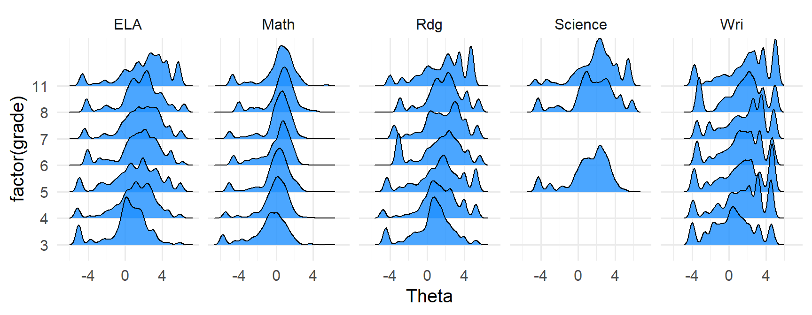
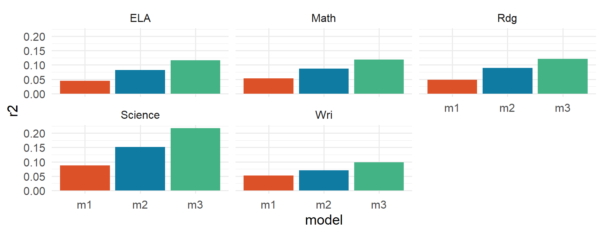
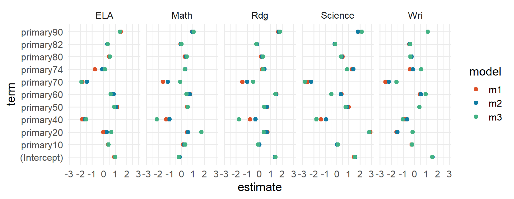
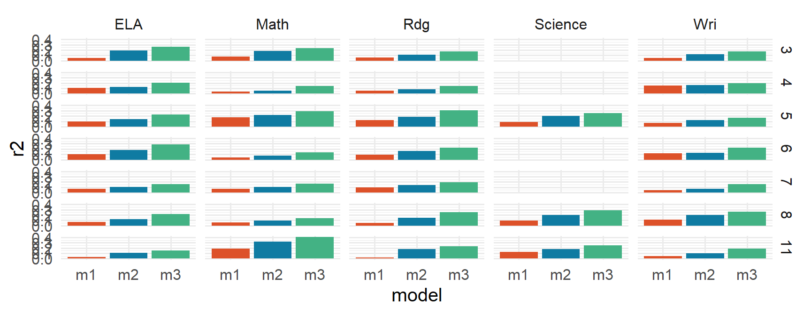

Week 4: Batch loading data & list columns
University of Oregon
Spring 2026
Batch Load Data & List Columns
Week 4
Agenda
- Review Lab 2
map_dfr- List columns
- Batch-loading data
- Midterm Student Survey
Learning objectives
- Understand when
map_dfrcan and should be applied - Better understand file paths, and how
{fs}can help - Be able to batch load data of a specific type within a mixed-type directory
- Use file names to pull data
- Introduce list columns
- Contrast:
group_by() |> nest() |> mutate() |> map()withnest_by() |> summarize()
- Understand list columns and how they relate to
base::split - Fluently nest/unnest data frames
- Understand why
tidyr::nest()can be a powerful framework (data frames) and whentidyr::unnest()can/should be used to move out of nested data frames and into a standard data frame
Review Lab 2
map_dfr()
map_dfr()
If each iteration returns a data frame, you can use map_dfr to automatically bind all the data frames together
Example
Create a function that simulates data (please copy the code and follow along)
# A tibble: 10 × 2
sample_id sample
<int> <dbl>
1 1 1.26
2 2 0.645
3 3 0.463
4 4 0.770
5 5 -0.226
6 6 -0.352
7 7 -0.649
8 8 -1.26
9 9 -1.70
10 10 -1.83 Two more quick examples
Simulation
- Assume we want to vary the sample size from 10 to 150 by increments of 5
meanstays constant at 100sdis constant at 10
Try with purrr::map()
Swap for map_dfr
Try it - what happens?
Notice a problem here?
.id
Either a string or NULL
- If a string, the output will contain a variable with that name, storing either the name (if
.xis named) or the index (if.xis unnamed) of the input. - If
NULL, the default, no variable will be created.
.id string unnamed
# A tibble: 15 × 3
iteration sample_id sample
<chr> <int> <dbl>
1 1 1 100.
2 1 2 108.
3 1 3 98.9
4 1 4 106.
5 1 5 103.
6 1 6 119.
7 1 7 109.
8 1 8 116.
9 1 9 102.
10 1 10 82.9
11 2 1 86.0
12 2 2 98.1
13 2 3 126.
14 2 4 95.4
15 2 5 102. .id named string
setNames()
- sets the names on an object and returns the object
setNames(object = nm, nm)
nm= a character vector of names to assign to the object
Try again
# A tibble: 15 × 3
n sample_id sample
<chr> <int> <dbl>
1 ten 1 99.7
2 ten 2 109.
3 ten 3 119.
4 ten 4 97.9
5 ten 5 99.9
6 ten 6 101.
7 ten 7 80.5
8 ten 8 98.3
9 ten 9 101.
10 ten 10 96.7
11 fifteen 1 98.0
12 fifteen 2 93.2
13 fifteen 3 102.
14 fifteen 4 101.
15 fifteen 5 103. broom::tidy()
The {broom} package helps us extract model output in a tidy format
Fit separate models by year
Again - probably not the best statistically
# A tibble: 16 × 5
term estimate std.error statistic p.value
<chr> <dbl> <dbl> <dbl> <dbl>
1 (Intercept) 2.08 0.171 12.2 8.00e-33
2 age 0.0195 0.00349 5.59 2.60e- 8
3 (Intercept) 2.08 0.218 9.55 1.19e-20
4 age 0.0196 0.00440 4.46 9.14e- 6
5 (Intercept) 1.77 0.246 7.17 1.53e-12
6 age 0.0239 0.00503 4.74 2.46e- 6
7 (Intercept) 2.10 0.150 14.0 1.42e-42
8 age 0.0178 0.00298 5.98 2.59e- 9
9 (Intercept) 1.86 0.216 8.60 2.17e-17
10 age 0.0239 0.00431 5.54 3.63e- 8
11 (Intercept) 2.07 0.210 9.87 2.90e-22
12 age 0.0199 0.00409 4.87 1.25e- 6
13 (Intercept) 1.88 0.226 8.32 2.28e-16
14 age 0.0255 0.00445 5.73 1.27e- 8
15 (Intercept) 1.98 0.188 10.5 3.24e-25
16 age 0.0205 0.00361 5.67 1.65e- 8Add .id
In cases like the preceding, .id becomes invaluable
# A tibble: 16 × 6
year term estimate std.error statistic p.value
<chr> <chr> <dbl> <dbl> <dbl> <dbl>
1 2000 (Intercept) 2.08 0.171 12.2 8.00e-33
2 2000 age 0.0195 0.00349 5.59 2.60e- 8
3 2002 (Intercept) 2.08 0.218 9.55 1.19e-20
4 2002 age 0.0196 0.00440 4.46 9.14e- 6
5 2004 (Intercept) 1.77 0.246 7.17 1.53e-12
6 2004 age 0.0239 0.00503 4.74 2.46e- 6
7 2006 (Intercept) 2.10 0.150 14.0 1.42e-42
8 2006 age 0.0178 0.00298 5.98 2.59e- 9
9 2008 (Intercept) 1.86 0.216 8.60 2.17e-17
10 2008 age 0.0239 0.00431 5.54 3.63e- 8
11 2010 (Intercept) 2.07 0.210 9.87 2.90e-22
12 2010 age 0.0199 0.00409 4.87 1.25e- 6
13 2012 (Intercept) 1.88 0.226 8.32 2.28e-16
14 2012 age 0.0255 0.00445 5.73 1.27e- 8
15 2014 (Intercept) 1.98 0.188 10.5 3.24e-25
16 2014 age 0.0205 0.00361 5.67 1.65e- 8Batch-loading data
Please follow along
{fs} functions
{fs}functions always return ‘tidy’ paths{fs}functions divided into four main categories:path_: manipulating and constructing pathsfile_: filesdir_: directorieslink_: links
{fs}
Could we apply map_dfr here?
C:/Users/jnese/Desktop/BRT/Teaching/3_Functional-Programming/functional-programming_spring-2026/data/benchmarks.csv
C:/Users/jnese/Desktop/BRT/Teaching/3_Functional-Programming/functional-programming_spring-2026/data/insurance_coverage.csv
C:/Users/jnese/Desktop/BRT/Teaching/3_Functional-Programming/functional-programming_spring-2026/data/pfiles_sim
C:/Users/jnese/Desktop/BRT/Teaching/3_Functional-Programming/functional-programming_spring-2026/data/question_2C:/Users/jnese/Desktop/BRT/Teaching/3_Functional-Programming/functional-programming_spring-2026/data/pfiles_sim/g11ELApfiles18_sim.csv
C:/Users/jnese/Desktop/BRT/Teaching/3_Functional-Programming/functional-programming_spring-2026/data/pfiles_sim/g11Mathpfiles18_sim.csv
C:/Users/jnese/Desktop/BRT/Teaching/3_Functional-Programming/functional-programming_spring-2026/data/pfiles_sim/g11Rdgpfiles18_sim.csv
C:/Users/jnese/Desktop/BRT/Teaching/3_Functional-Programming/functional-programming_spring-2026/data/pfiles_sim/g11Sciencepfiles18_sim.csv
C:/Users/jnese/Desktop/BRT/Teaching/3_Functional-Programming/functional-programming_spring-2026/data/pfiles_sim/g11Wripfiles18_sim.csv
C:/Users/jnese/Desktop/BRT/Teaching/3_Functional-Programming/functional-programming_spring-2026/data/pfiles_sim/g3ELApfiles18_sim.csv
C:/Users/jnese/Desktop/BRT/Teaching/3_Functional-Programming/functional-programming_spring-2026/data/pfiles_sim/g3Mathpfiles18_sim.csv
C:/Users/jnese/Desktop/BRT/Teaching/3_Functional-Programming/functional-programming_spring-2026/data/pfiles_sim/g3Rdgpfiles18_sim.csv
C:/Users/jnese/Desktop/BRT/Teaching/3_Functional-Programming/functional-programming_spring-2026/data/pfiles_sim/g3Wripfiles18_sim.csv
C:/Users/jnese/Desktop/BRT/Teaching/3_Functional-Programming/functional-programming_spring-2026/data/pfiles_sim/g4ELApfiles18_sim.csv
C:/Users/jnese/Desktop/BRT/Teaching/3_Functional-Programming/functional-programming_spring-2026/data/pfiles_sim/g4Mathpfiles18_sim.csv
C:/Users/jnese/Desktop/BRT/Teaching/3_Functional-Programming/functional-programming_spring-2026/data/pfiles_sim/g4Rdgpfiles18_sim.csv
C:/Users/jnese/Desktop/BRT/Teaching/3_Functional-Programming/functional-programming_spring-2026/data/pfiles_sim/g4Wripfiles18_sim.csv
C:/Users/jnese/Desktop/BRT/Teaching/3_Functional-Programming/functional-programming_spring-2026/data/pfiles_sim/g5ELApfiles18_sim.csv
C:/Users/jnese/Desktop/BRT/Teaching/3_Functional-Programming/functional-programming_spring-2026/data/pfiles_sim/g5Mathpfiles18_sim.csv
C:/Users/jnese/Desktop/BRT/Teaching/3_Functional-Programming/functional-programming_spring-2026/data/pfiles_sim/g5Rdgpfiles18_sim.csv
C:/Users/jnese/Desktop/BRT/Teaching/3_Functional-Programming/functional-programming_spring-2026/data/pfiles_sim/g5Sciencepfiles18_sim.csv
C:/Users/jnese/Desktop/BRT/Teaching/3_Functional-Programming/functional-programming_spring-2026/data/pfiles_sim/g5Wripfiles18_sim.csv
C:/Users/jnese/Desktop/BRT/Teaching/3_Functional-Programming/functional-programming_spring-2026/data/pfiles_sim/g6ELApfiles18_sim.csv
C:/Users/jnese/Desktop/BRT/Teaching/3_Functional-Programming/functional-programming_spring-2026/data/pfiles_sim/g6Mathpfiles18_sim.csv
C:/Users/jnese/Desktop/BRT/Teaching/3_Functional-Programming/functional-programming_spring-2026/data/pfiles_sim/g6Rdgpfiles18_sim.csv
C:/Users/jnese/Desktop/BRT/Teaching/3_Functional-Programming/functional-programming_spring-2026/data/pfiles_sim/g6Wripfiles18_sim.csv
C:/Users/jnese/Desktop/BRT/Teaching/3_Functional-Programming/functional-programming_spring-2026/data/pfiles_sim/g7ELApfiles18_sim.csv
C:/Users/jnese/Desktop/BRT/Teaching/3_Functional-Programming/functional-programming_spring-2026/data/pfiles_sim/g7Mathpfiles18_sim.csv
C:/Users/jnese/Desktop/BRT/Teaching/3_Functional-Programming/functional-programming_spring-2026/data/pfiles_sim/g7Rdgpfiles18_sim.csv
C:/Users/jnese/Desktop/BRT/Teaching/3_Functional-Programming/functional-programming_spring-2026/data/pfiles_sim/g7Wripfiles18_sim.csv
C:/Users/jnese/Desktop/BRT/Teaching/3_Functional-Programming/functional-programming_spring-2026/data/pfiles_sim/g8ELApfiles18_sim.csv
C:/Users/jnese/Desktop/BRT/Teaching/3_Functional-Programming/functional-programming_spring-2026/data/pfiles_sim/g8Mathpfiles18_sim.csv
C:/Users/jnese/Desktop/BRT/Teaching/3_Functional-Programming/functional-programming_spring-2026/data/pfiles_sim/g8Rdgpfiles18_sim.csv
C:/Users/jnese/Desktop/BRT/Teaching/3_Functional-Programming/functional-programming_spring-2026/data/pfiles_sim/g8Sciencepfiles18_sim.csv
C:/Users/jnese/Desktop/BRT/Teaching/3_Functional-Programming/functional-programming_spring-2026/data/pfiles_sim/g8Wripfiles18_sim.csvLimit files
- To be specific, we only want the
.csvfiles - That happens to be the only thing that’s in there but that’s not regularly the case
C:/Users/jnese/Desktop/BRT/Teaching/3_Functional-Programming/functional-programming_spring-2026/data/pfiles_sim/g11ELApfiles18_sim.csv
C:/Users/jnese/Desktop/BRT/Teaching/3_Functional-Programming/functional-programming_spring-2026/data/pfiles_sim/g11Mathpfiles18_sim.csv
C:/Users/jnese/Desktop/BRT/Teaching/3_Functional-Programming/functional-programming_spring-2026/data/pfiles_sim/g11Rdgpfiles18_sim.csv
C:/Users/jnese/Desktop/BRT/Teaching/3_Functional-Programming/functional-programming_spring-2026/data/pfiles_sim/g11Sciencepfiles18_sim.csv
C:/Users/jnese/Desktop/BRT/Teaching/3_Functional-Programming/functional-programming_spring-2026/data/pfiles_sim/g11Wripfiles18_sim.csv
C:/Users/jnese/Desktop/BRT/Teaching/3_Functional-Programming/functional-programming_spring-2026/data/pfiles_sim/g3ELApfiles18_sim.csv
C:/Users/jnese/Desktop/BRT/Teaching/3_Functional-Programming/functional-programming_spring-2026/data/pfiles_sim/g3Mathpfiles18_sim.csv
C:/Users/jnese/Desktop/BRT/Teaching/3_Functional-Programming/functional-programming_spring-2026/data/pfiles_sim/g3Rdgpfiles18_sim.csv
C:/Users/jnese/Desktop/BRT/Teaching/3_Functional-Programming/functional-programming_spring-2026/data/pfiles_sim/g3Wripfiles18_sim.csv
C:/Users/jnese/Desktop/BRT/Teaching/3_Functional-Programming/functional-programming_spring-2026/data/pfiles_sim/g4ELApfiles18_sim.csv
C:/Users/jnese/Desktop/BRT/Teaching/3_Functional-Programming/functional-programming_spring-2026/data/pfiles_sim/g4Mathpfiles18_sim.csv
C:/Users/jnese/Desktop/BRT/Teaching/3_Functional-Programming/functional-programming_spring-2026/data/pfiles_sim/g4Rdgpfiles18_sim.csv
C:/Users/jnese/Desktop/BRT/Teaching/3_Functional-Programming/functional-programming_spring-2026/data/pfiles_sim/g4Wripfiles18_sim.csv
C:/Users/jnese/Desktop/BRT/Teaching/3_Functional-Programming/functional-programming_spring-2026/data/pfiles_sim/g5ELApfiles18_sim.csv
C:/Users/jnese/Desktop/BRT/Teaching/3_Functional-Programming/functional-programming_spring-2026/data/pfiles_sim/g5Mathpfiles18_sim.csv
C:/Users/jnese/Desktop/BRT/Teaching/3_Functional-Programming/functional-programming_spring-2026/data/pfiles_sim/g5Rdgpfiles18_sim.csv
C:/Users/jnese/Desktop/BRT/Teaching/3_Functional-Programming/functional-programming_spring-2026/data/pfiles_sim/g5Sciencepfiles18_sim.csv
C:/Users/jnese/Desktop/BRT/Teaching/3_Functional-Programming/functional-programming_spring-2026/data/pfiles_sim/g5Wripfiles18_sim.csv
C:/Users/jnese/Desktop/BRT/Teaching/3_Functional-Programming/functional-programming_spring-2026/data/pfiles_sim/g6ELApfiles18_sim.csv
C:/Users/jnese/Desktop/BRT/Teaching/3_Functional-Programming/functional-programming_spring-2026/data/pfiles_sim/g6Mathpfiles18_sim.csv
C:/Users/jnese/Desktop/BRT/Teaching/3_Functional-Programming/functional-programming_spring-2026/data/pfiles_sim/g6Rdgpfiles18_sim.csv
C:/Users/jnese/Desktop/BRT/Teaching/3_Functional-Programming/functional-programming_spring-2026/data/pfiles_sim/g6Wripfiles18_sim.csv
C:/Users/jnese/Desktop/BRT/Teaching/3_Functional-Programming/functional-programming_spring-2026/data/pfiles_sim/g7ELApfiles18_sim.csv
C:/Users/jnese/Desktop/BRT/Teaching/3_Functional-Programming/functional-programming_spring-2026/data/pfiles_sim/g7Mathpfiles18_sim.csv
C:/Users/jnese/Desktop/BRT/Teaching/3_Functional-Programming/functional-programming_spring-2026/data/pfiles_sim/g7Rdgpfiles18_sim.csv
C:/Users/jnese/Desktop/BRT/Teaching/3_Functional-Programming/functional-programming_spring-2026/data/pfiles_sim/g7Wripfiles18_sim.csv
C:/Users/jnese/Desktop/BRT/Teaching/3_Functional-Programming/functional-programming_spring-2026/data/pfiles_sim/g8ELApfiles18_sim.csv
C:/Users/jnese/Desktop/BRT/Teaching/3_Functional-Programming/functional-programming_spring-2026/data/pfiles_sim/g8Mathpfiles18_sim.csv
C:/Users/jnese/Desktop/BRT/Teaching/3_Functional-Programming/functional-programming_spring-2026/data/pfiles_sim/g8Rdgpfiles18_sim.csv
C:/Users/jnese/Desktop/BRT/Teaching/3_Functional-Programming/functional-programming_spring-2026/data/pfiles_sim/g8Sciencepfiles18_sim.csv
C:/Users/jnese/Desktop/BRT/Teaching/3_Functional-Programming/functional-programming_spring-2026/data/pfiles_sim/g8Wripfiles18_sim.csvBatch load
Loop through the directories and import() or read_csv()
# A tibble: 15,945 × 22
Entry Theta Status Count RawScore SE Infit Infit_Z Outfit Outfit_Z
<dbl> <dbl> <dbl> <dbl> <dbl> <dbl> <dbl> <dbl> <dbl> <dbl>
1 123 1.27 1 36 23 0.371 0.93 -0.34 0.82 -0.62
2 88 1.55 1 36 25 0.385 0.95 -0.37 0.81 -0.56
3 105 3.28 1 36 33 0.619 0.9 -0.04 1.63 1.03
4 153 4.48 1 36 35 1.02 0.93 0.23 0.35 -0.16
5 437 2.67 1 36 31 0.501 0.92 -0.18 0.88 -0.12
6 307 5.71 0 36 36 1.84 1 0 1 0
7 305 3.73 1 36 34 0.741 1.06 0.31 0.86 0.17
8 42 0.609 1 36 18 0.36 1.55 2.56 1.74 3.31
9 59 -2.62 1 36 3 1.03 0.85 0.06 0.17 -0.37
10 304 5.71 0 36 36 1.84 1 0 1 0
# ℹ 15,935 more rows
# ℹ 12 more variables: Displacement <dbl>, PointMeasureCorr <dbl>,
# Weight <dbl>, ObservMatch <dbl>, ExpectMatch <dbl>,
# PointMeasureExpected <dbl>, RMSR <dbl>, WMLE <dbl>, testeventid <dbl>,
# ssid <dbl>, asmtprmrydsbltycd <dbl>, asmtscndrydsbltycd <dbl>Wait!
We’ve lost a lot of info - no way to identify which file is which
Try to fix it!
Add .id
Make sure you have this object
# A tibble: 15,945 × 23
file Entry Theta Status Count RawScore SE Infit Infit_Z Outfit Outfit_Z
<chr> <dbl> <dbl> <dbl> <dbl> <dbl> <dbl> <dbl> <dbl> <dbl> <dbl>
1 C:/Us… 123 1.27 1 36 23 0.371 0.93 -0.34 0.82 -0.62
2 C:/Us… 88 1.55 1 36 25 0.385 0.95 -0.37 0.81 -0.56
3 C:/Us… 105 3.28 1 36 33 0.619 0.9 -0.04 1.63 1.03
4 C:/Us… 153 4.48 1 36 35 1.02 0.93 0.23 0.35 -0.16
5 C:/Us… 437 2.67 1 36 31 0.501 0.92 -0.18 0.88 -0.12
6 C:/Us… 307 5.71 0 36 36 1.84 1 0 1 0
7 C:/Us… 305 3.73 1 36 34 0.741 1.06 0.31 0.86 0.17
8 C:/Us… 42 0.609 1 36 18 0.36 1.55 2.56 1.74 3.31
9 C:/Us… 59 -2.62 1 36 3 1.03 0.85 0.06 0.17 -0.37
10 C:/Us… 304 5.71 0 36 36 1.84 1 0 1 0
# ℹ 15,935 more rows
# ℹ 12 more variables: Displacement <dbl>, PointMeasureCorr <dbl>,
# Weight <dbl>, ObservMatch <dbl>, ExpectMatch <dbl>,
# PointMeasureExpected <dbl>, RMSR <dbl>, WMLE <dbl>, testeventid <dbl>,
# ssid <dbl>, asmtprmrydsbltycd <dbl>, asmtscndrydsbltycd <dbl>Rows per file
# A tibble: 31 × 2
file n
<chr> <int>
1 C:/Users/jnese/Desktop/BRT/Teaching/3_Functional-Programming/functiona… 453
2 C:/Users/jnese/Desktop/BRT/Teaching/3_Functional-Programming/functiona… 460
3 C:/Users/jnese/Desktop/BRT/Teaching/3_Functional-Programming/functiona… 453
4 C:/Users/jnese/Desktop/BRT/Teaching/3_Functional-Programming/functiona… 438
5 C:/Users/jnese/Desktop/BRT/Teaching/3_Functional-Programming/functiona… 453
6 C:/Users/jnese/Desktop/BRT/Teaching/3_Functional-Programming/functiona… 540
7 C:/Users/jnese/Desktop/BRT/Teaching/3_Functional-Programming/functiona… 536
8 C:/Users/jnese/Desktop/BRT/Teaching/3_Functional-Programming/functiona… 540
9 C:/Users/jnese/Desktop/BRT/Teaching/3_Functional-Programming/functiona… 540
10 C:/Users/jnese/Desktop/BRT/Teaching/3_Functional-Programming/functiona… 585
# ℹ 21 more rowsStill a bit cumbersome - What can we do?
Remove path
Remove the here::here() path from string
# A tibble: 31 × 2
file n
<chr> <int>
1 g11ELApfiles18_sim.csv 453
2 g11Mathpfiles18_sim.csv 460
3 g11Rdgpfiles18_sim.csv 453
4 g11Sciencepfiles18_sim.csv 438
5 g11Wripfiles18_sim.csv 453
6 g3ELApfiles18_sim.csv 540
7 g3Mathpfiles18_sim.csv 536
8 g3Rdgpfiles18_sim.csv 540
9 g3Wripfiles18_sim.csv 540
10 g4ELApfiles18_sim.csv 585
# ℹ 21 more rowsFile names
[1] "g11ELApfiles18_sim.csv" "g5Mathpfiles18_sim.csv"
[3] "g8Rdgpfiles18_sim.csv" "g8Sciencepfiles18_sim.csv"- They’re informative!
- grade
- content area
- year (20
18)
- Name your files thoughtfully
Pull out pieces you need
- Regular expressions are most powerful here
- We haven’t talked about them much
- Try RegExplain
- Or really, just use GenAI
Pull “grade”
- I don’t expect you to know this, but you should learn how.
- Not regex, but the idea/process
- Also, there’s other ways you could extract the same info
But again, GenAI is very helpful for regular expression!
# A tibble: 15,945 × 2
file grade
<chr> <chr>
1 g11ELApfiles18_sim.csv 11
2 g11ELApfiles18_sim.csv 11
3 g11ELApfiles18_sim.csv 11
4 g11ELApfiles18_sim.csv 11
5 g11ELApfiles18_sim.csv 11
6 g11ELApfiles18_sim.csv 11
7 g11ELApfiles18_sim.csv 11
8 g11ELApfiles18_sim.csv 11
9 g11ELApfiles18_sim.csv 11
10 g11ELApfiles18_sim.csv 11
# ℹ 15,935 more rowsparse_number()
In this case parse_number() also works - but note that it would not work to extract the “year”
# A tibble: 15,945 × 2
file grade
<chr> <dbl>
1 g11ELApfiles18_sim.csv 11
2 g11ELApfiles18_sim.csv 11
3 g11ELApfiles18_sim.csv 11
4 g11ELApfiles18_sim.csv 11
5 g11ELApfiles18_sim.csv 11
6 g11ELApfiles18_sim.csv 11
7 g11ELApfiles18_sim.csv 11
8 g11ELApfiles18_sim.csv 11
9 g11ELApfiles18_sim.csv 11
10 g11ELApfiles18_sim.csv 11
# ℹ 15,935 more rowsExtract “grade” and “year”
# A tibble: 15,945 × 3
file grade year
<chr> <chr> <chr>
1 g11ELApfiles18_sim.csv 11 18
2 g11ELApfiles18_sim.csv 11 18
3 g11ELApfiles18_sim.csv 11 18
4 g11ELApfiles18_sim.csv 11 18
5 g11ELApfiles18_sim.csv 11 18
6 g11ELApfiles18_sim.csv 11 18
7 g11ELApfiles18_sim.csv 11 18
8 g11ELApfiles18_sim.csv 11 18
9 g11ELApfiles18_sim.csv 11 18
10 g11ELApfiles18_sim.csv 11 18
# ℹ 15,935 more rowsExtract “content” area
# A tibble: 15,945 × 4
file grade year content
<chr> <chr> <chr> <chr>
1 g11ELApfiles18_sim.csv 11 18 ELA
2 g11ELApfiles18_sim.csv 11 18 ELA
3 g11ELApfiles18_sim.csv 11 18 ELA
4 g11ELApfiles18_sim.csv 11 18 ELA
5 g11ELApfiles18_sim.csv 11 18 ELA
6 g11ELApfiles18_sim.csv 11 18 ELA
7 g11ELApfiles18_sim.csv 11 18 ELA
8 g11ELApfiles18_sim.csv 11 18 ELA
9 g11ELApfiles18_sim.csv 11 18 ELA
10 g11ELApfiles18_sim.csv 11 18 ELA
# ℹ 15,935 more rowsDouble checks: “grade”
# A tibble: 7 × 2
grade n
<chr> <int>
1 11 2257
2 3 2156
3 4 2341
4 5 2632
5 6 2216
6 7 1962
7 8 2381Double checks: “year”
Double checks: “content”
# A tibble: 5 × 2
content n
<chr> <int>
1 ELA 3627
2 Math 3629
3 Rdg 3627
4 Science 1435
5 Wri 3627Finalize
Copy & run this code
d <- batch2 |>
mutate(
grade = str_replace_all(
file, "g(\\d?\\d).+", "\\1"
),
grade = as.integer(grade),
year = str_replace_all(
file, ".+files(\\d\\d)_sim.+", "\\1"
),
year = as.integer(grade),
content = str_replace_all(
file, "g\\d?\\d(.+)pfiles.+", "\\1"
)
) |>
select(
ssid, grade, year, content, testeventid,
asmtprmrydsbltycd, asmtscndrydsbltycd, Entry:WMLE
)Final product
- In this case, we basically have a tidy data frame already!
- We’ve reduced our problem from 31 files to a single file
# A tibble: 15,945 × 25
ssid grade year content testeventid asmtprmrydsbltycd asmtscndrydsbltycd
<dbl> <int> <int> <chr> <dbl> <dbl> <dbl>
1 9466908 11 11 ELA 148933 0 0
2 7683685 11 11 ELA 147875 10 0
3 9025693 11 11 ELA 143699 40 20
4 10099824 11 11 ELA 143962 82 0
5 18886078 11 11 ELA 150680 10 0
6 10606750 11 11 ELA 144583 80 80
7 10541306 11 11 ELA 145204 50 0
8 7632967 11 11 ELA 148926 10 0
9 7661118 11 11 ELA 148893 50 0
10 10547177 11 11 ELA 144583 82 0
# ℹ 15,935 more rows
# ℹ 18 more variables: Entry <dbl>, Theta <dbl>, Status <dbl>, Count <dbl>,
# RawScore <dbl>, SE <dbl>, Infit <dbl>, Infit_Z <dbl>, Outfit <dbl>,
# Outfit_Z <dbl>, Displacement <dbl>, PointMeasureCorr <dbl>, Weight <dbl>,
# ObservMatch <dbl>, ExpectMatch <dbl>, PointMeasureExpected <dbl>,
# RMSR <dbl>, WMLE <dbl>Quick look at distributions

Summary stats
# A tibble: 77 × 7
# Groups: grade [7]
grade asmtprmrydsbltycd ELA Math Rdg Wri Science
<int> <dbl> <dbl> <dbl> <dbl> <dbl> <dbl>
1 3 0 -0.0736 -1.21 1.01 1.61 NA
2 3 10 0.370 -0.818 0.518 0.321 NA
3 3 20 -0.0633 -1.25 1.52 -0.578 NA
4 3 40 -1.88 -3.56 -1.76 -0.751 NA
5 3 50 0.946 -0.0919 0.979 1.19 NA
6 3 60 0.841 1.04 2.18 1.07 NA
7 3 70 -1.10 -1.52 -0.845 -1.01 NA
8 3 74 0.996 0.0208 0.6 1.29 NA
9 3 80 -0.144 -0.533 0.679 0.269 NA
10 3 82 0.371 -1.08 0.568 0.344 NA
# ℹ 67 more rowsBacking up a bit
What if we wanted only math files?
C:/Users/jnese/Desktop/BRT/Teaching/3_Functional-Programming/functional-programming_spring-2026/data/pfiles_sim/g11Mathpfiles18_sim.csv
C:/Users/jnese/Desktop/BRT/Teaching/3_Functional-Programming/functional-programming_spring-2026/data/pfiles_sim/g3Mathpfiles18_sim.csv
C:/Users/jnese/Desktop/BRT/Teaching/3_Functional-Programming/functional-programming_spring-2026/data/pfiles_sim/g4Mathpfiles18_sim.csv
C:/Users/jnese/Desktop/BRT/Teaching/3_Functional-Programming/functional-programming_spring-2026/data/pfiles_sim/g5Mathpfiles18_sim.csv
C:/Users/jnese/Desktop/BRT/Teaching/3_Functional-Programming/functional-programming_spring-2026/data/pfiles_sim/g6Mathpfiles18_sim.csv
C:/Users/jnese/Desktop/BRT/Teaching/3_Functional-Programming/functional-programming_spring-2026/data/pfiles_sim/g7Mathpfiles18_sim.csv
C:/Users/jnese/Desktop/BRT/Teaching/3_Functional-Programming/functional-programming_spring-2026/data/pfiles_sim/g8Mathpfiles18_sim.csvOnly Grade 5 files?
You try
The rest is the same
# A tibble: 2,632 × 23
file Entry Theta Status Count RawScore SE Infit Infit_Z Outfit Outfit_Z
<chr> <dbl> <dbl> <dbl> <dbl> <dbl> <dbl> <dbl> <dbl> <dbl> <dbl>
1 g5ELA… 375 3.15 1 36 32 0.551 1.22 0.91 2.1 2.26
2 g5ELA… 305 0.366 1 36 16 0.389 0.94 -0.31 0.98 -0.39
3 g5ELA… 163 -4.95 -1 36 0 1.85 1 0 1 0
4 g5ELA… 524 -4.95 -1 36 0 1.85 1 0 1 0
5 g5ELA… 81 3.15 1 36 32 0.551 0.96 0 0.58 -0.24
6 g5ELA… 325 1.72 1 36 25 0.400 1.14 0.92 1.23 0.57
7 g5ELA… 163 1.88 1 36 26 0.408 0.82 -1.08 0.57 -0.91
8 g5ELA… 116 5.93 0 36 36 1.84 1 0 1 0
9 g5ELA… 273 1.41 1 36 23 0.389 1.08 0.44 0.94 0.1
10 g5ELA… 202 1.88 1 36 26 0.408 0.79 -0.84 0.76 -0.63
# ℹ 2,622 more rows
# ℹ 12 more variables: Displacement <dbl>, PointMeasureCorr <dbl>,
# Weight <dbl>, ObservMatch <dbl>, ExpectMatch <dbl>,
# PointMeasureExpected <dbl>, RMSR <dbl>, WMLE <dbl>, testeventid <dbl>,
# ssid <dbl>, asmtprmrydsbltycd <dbl>, asmtscndrydsbltycd <dbl>base equivalents
[1] "g11ELApfiles18_sim.csv" "g11Mathpfiles18_sim.csv"
[3] "g11Rdgpfiles18_sim.csv" "g11Sciencepfiles18_sim.csv"
[5] "g11Wripfiles18_sim.csv" "g3ELApfiles18_sim.csv"
[7] "g3Mathpfiles18_sim.csv" "g3Rdgpfiles18_sim.csv"
[9] "g3Wripfiles18_sim.csv" "g4ELApfiles18_sim.csv"
[11] "g4Mathpfiles18_sim.csv" "g4Rdgpfiles18_sim.csv"
[13] "g4Wripfiles18_sim.csv" "g5ELApfiles18_sim.csv"
[15] "g5Mathpfiles18_sim.csv" "g5Rdgpfiles18_sim.csv"
[17] "g5Sciencepfiles18_sim.csv" "g5Wripfiles18_sim.csv"
[19] "g6ELApfiles18_sim.csv" "g6Mathpfiles18_sim.csv"
[21] "g6Rdgpfiles18_sim.csv" "g6Wripfiles18_sim.csv"
[23] "g7ELApfiles18_sim.csv" "g7Mathpfiles18_sim.csv"
[25] "g7Rdgpfiles18_sim.csv" "g7Wripfiles18_sim.csv"
[27] "g8ELApfiles18_sim.csv" "g8Mathpfiles18_sim.csv"
[29] "g8Rdgpfiles18_sim.csv" "g8Sciencepfiles18_sim.csv"
[31] "g8Wripfiles18_sim.csv" Full path
full.names = TRUE
[1] "C:/Users/jnese/Desktop/BRT/Teaching/3_Functional-Programming/functional-programming_spring-2026/data/pfiles_sim/g11ELApfiles18_sim.csv"
[2] "C:/Users/jnese/Desktop/BRT/Teaching/3_Functional-Programming/functional-programming_spring-2026/data/pfiles_sim/g11Mathpfiles18_sim.csv"
[3] "C:/Users/jnese/Desktop/BRT/Teaching/3_Functional-Programming/functional-programming_spring-2026/data/pfiles_sim/g11Rdgpfiles18_sim.csv"
[4] "C:/Users/jnese/Desktop/BRT/Teaching/3_Functional-Programming/functional-programming_spring-2026/data/pfiles_sim/g11Sciencepfiles18_sim.csv"
[5] "C:/Users/jnese/Desktop/BRT/Teaching/3_Functional-Programming/functional-programming_spring-2026/data/pfiles_sim/g11Wripfiles18_sim.csv"
[6] "C:/Users/jnese/Desktop/BRT/Teaching/3_Functional-Programming/functional-programming_spring-2026/data/pfiles_sim/g3ELApfiles18_sim.csv"
[7] "C:/Users/jnese/Desktop/BRT/Teaching/3_Functional-Programming/functional-programming_spring-2026/data/pfiles_sim/g3Mathpfiles18_sim.csv"
[8] "C:/Users/jnese/Desktop/BRT/Teaching/3_Functional-Programming/functional-programming_spring-2026/data/pfiles_sim/g3Rdgpfiles18_sim.csv"
[9] "C:/Users/jnese/Desktop/BRT/Teaching/3_Functional-Programming/functional-programming_spring-2026/data/pfiles_sim/g3Wripfiles18_sim.csv"
[10] "C:/Users/jnese/Desktop/BRT/Teaching/3_Functional-Programming/functional-programming_spring-2026/data/pfiles_sim/g4ELApfiles18_sim.csv"
[11] "C:/Users/jnese/Desktop/BRT/Teaching/3_Functional-Programming/functional-programming_spring-2026/data/pfiles_sim/g4Mathpfiles18_sim.csv"
[12] "C:/Users/jnese/Desktop/BRT/Teaching/3_Functional-Programming/functional-programming_spring-2026/data/pfiles_sim/g4Rdgpfiles18_sim.csv"
[13] "C:/Users/jnese/Desktop/BRT/Teaching/3_Functional-Programming/functional-programming_spring-2026/data/pfiles_sim/g4Wripfiles18_sim.csv"
[14] "C:/Users/jnese/Desktop/BRT/Teaching/3_Functional-Programming/functional-programming_spring-2026/data/pfiles_sim/g5ELApfiles18_sim.csv"
[15] "C:/Users/jnese/Desktop/BRT/Teaching/3_Functional-Programming/functional-programming_spring-2026/data/pfiles_sim/g5Mathpfiles18_sim.csv"
[16] "C:/Users/jnese/Desktop/BRT/Teaching/3_Functional-Programming/functional-programming_spring-2026/data/pfiles_sim/g5Rdgpfiles18_sim.csv"
[17] "C:/Users/jnese/Desktop/BRT/Teaching/3_Functional-Programming/functional-programming_spring-2026/data/pfiles_sim/g5Sciencepfiles18_sim.csv"
[18] "C:/Users/jnese/Desktop/BRT/Teaching/3_Functional-Programming/functional-programming_spring-2026/data/pfiles_sim/g5Wripfiles18_sim.csv"
[19] "C:/Users/jnese/Desktop/BRT/Teaching/3_Functional-Programming/functional-programming_spring-2026/data/pfiles_sim/g6ELApfiles18_sim.csv"
[20] "C:/Users/jnese/Desktop/BRT/Teaching/3_Functional-Programming/functional-programming_spring-2026/data/pfiles_sim/g6Mathpfiles18_sim.csv"
[21] "C:/Users/jnese/Desktop/BRT/Teaching/3_Functional-Programming/functional-programming_spring-2026/data/pfiles_sim/g6Rdgpfiles18_sim.csv"
[22] "C:/Users/jnese/Desktop/BRT/Teaching/3_Functional-Programming/functional-programming_spring-2026/data/pfiles_sim/g6Wripfiles18_sim.csv"
[23] "C:/Users/jnese/Desktop/BRT/Teaching/3_Functional-Programming/functional-programming_spring-2026/data/pfiles_sim/g7ELApfiles18_sim.csv"
[24] "C:/Users/jnese/Desktop/BRT/Teaching/3_Functional-Programming/functional-programming_spring-2026/data/pfiles_sim/g7Mathpfiles18_sim.csv"
[25] "C:/Users/jnese/Desktop/BRT/Teaching/3_Functional-Programming/functional-programming_spring-2026/data/pfiles_sim/g7Rdgpfiles18_sim.csv"
[26] "C:/Users/jnese/Desktop/BRT/Teaching/3_Functional-Programming/functional-programming_spring-2026/data/pfiles_sim/g7Wripfiles18_sim.csv"
[27] "C:/Users/jnese/Desktop/BRT/Teaching/3_Functional-Programming/functional-programming_spring-2026/data/pfiles_sim/g8ELApfiles18_sim.csv"
[28] "C:/Users/jnese/Desktop/BRT/Teaching/3_Functional-Programming/functional-programming_spring-2026/data/pfiles_sim/g8Mathpfiles18_sim.csv"
[29] "C:/Users/jnese/Desktop/BRT/Teaching/3_Functional-Programming/functional-programming_spring-2026/data/pfiles_sim/g8Rdgpfiles18_sim.csv"
[30] "C:/Users/jnese/Desktop/BRT/Teaching/3_Functional-Programming/functional-programming_spring-2026/data/pfiles_sim/g8Sciencepfiles18_sim.csv"
[31] "C:/Users/jnese/Desktop/BRT/Teaching/3_Functional-Programming/functional-programming_spring-2026/data/pfiles_sim/g8Wripfiles18_sim.csv" Only .csv
pattern = "__"
[1] "C:/Users/jnese/Desktop/BRT/Teaching/3_Functional-Programming/functional-programming_spring-2026/data/pfiles_sim/g11ELApfiles18_sim.csv"
[2] "C:/Users/jnese/Desktop/BRT/Teaching/3_Functional-Programming/functional-programming_spring-2026/data/pfiles_sim/g11Mathpfiles18_sim.csv"
[3] "C:/Users/jnese/Desktop/BRT/Teaching/3_Functional-Programming/functional-programming_spring-2026/data/pfiles_sim/g11Rdgpfiles18_sim.csv"
[4] "C:/Users/jnese/Desktop/BRT/Teaching/3_Functional-Programming/functional-programming_spring-2026/data/pfiles_sim/g11Sciencepfiles18_sim.csv"
[5] "C:/Users/jnese/Desktop/BRT/Teaching/3_Functional-Programming/functional-programming_spring-2026/data/pfiles_sim/g11Wripfiles18_sim.csv"
[6] "C:/Users/jnese/Desktop/BRT/Teaching/3_Functional-Programming/functional-programming_spring-2026/data/pfiles_sim/g3ELApfiles18_sim.csv"
[7] "C:/Users/jnese/Desktop/BRT/Teaching/3_Functional-Programming/functional-programming_spring-2026/data/pfiles_sim/g3Mathpfiles18_sim.csv"
[8] "C:/Users/jnese/Desktop/BRT/Teaching/3_Functional-Programming/functional-programming_spring-2026/data/pfiles_sim/g3Rdgpfiles18_sim.csv"
[9] "C:/Users/jnese/Desktop/BRT/Teaching/3_Functional-Programming/functional-programming_spring-2026/data/pfiles_sim/g3Wripfiles18_sim.csv"
[10] "C:/Users/jnese/Desktop/BRT/Teaching/3_Functional-Programming/functional-programming_spring-2026/data/pfiles_sim/g4ELApfiles18_sim.csv"
[11] "C:/Users/jnese/Desktop/BRT/Teaching/3_Functional-Programming/functional-programming_spring-2026/data/pfiles_sim/g4Mathpfiles18_sim.csv"
[12] "C:/Users/jnese/Desktop/BRT/Teaching/3_Functional-Programming/functional-programming_spring-2026/data/pfiles_sim/g4Rdgpfiles18_sim.csv"
[13] "C:/Users/jnese/Desktop/BRT/Teaching/3_Functional-Programming/functional-programming_spring-2026/data/pfiles_sim/g4Wripfiles18_sim.csv"
[14] "C:/Users/jnese/Desktop/BRT/Teaching/3_Functional-Programming/functional-programming_spring-2026/data/pfiles_sim/g5ELApfiles18_sim.csv"
[15] "C:/Users/jnese/Desktop/BRT/Teaching/3_Functional-Programming/functional-programming_spring-2026/data/pfiles_sim/g5Mathpfiles18_sim.csv"
[16] "C:/Users/jnese/Desktop/BRT/Teaching/3_Functional-Programming/functional-programming_spring-2026/data/pfiles_sim/g5Rdgpfiles18_sim.csv"
[17] "C:/Users/jnese/Desktop/BRT/Teaching/3_Functional-Programming/functional-programming_spring-2026/data/pfiles_sim/g5Sciencepfiles18_sim.csv"
[18] "C:/Users/jnese/Desktop/BRT/Teaching/3_Functional-Programming/functional-programming_spring-2026/data/pfiles_sim/g5Wripfiles18_sim.csv"
[19] "C:/Users/jnese/Desktop/BRT/Teaching/3_Functional-Programming/functional-programming_spring-2026/data/pfiles_sim/g6ELApfiles18_sim.csv"
[20] "C:/Users/jnese/Desktop/BRT/Teaching/3_Functional-Programming/functional-programming_spring-2026/data/pfiles_sim/g6Mathpfiles18_sim.csv"
[21] "C:/Users/jnese/Desktop/BRT/Teaching/3_Functional-Programming/functional-programming_spring-2026/data/pfiles_sim/g6Rdgpfiles18_sim.csv"
[22] "C:/Users/jnese/Desktop/BRT/Teaching/3_Functional-Programming/functional-programming_spring-2026/data/pfiles_sim/g6Wripfiles18_sim.csv"
[23] "C:/Users/jnese/Desktop/BRT/Teaching/3_Functional-Programming/functional-programming_spring-2026/data/pfiles_sim/g7ELApfiles18_sim.csv"
[24] "C:/Users/jnese/Desktop/BRT/Teaching/3_Functional-Programming/functional-programming_spring-2026/data/pfiles_sim/g7Mathpfiles18_sim.csv"
[25] "C:/Users/jnese/Desktop/BRT/Teaching/3_Functional-Programming/functional-programming_spring-2026/data/pfiles_sim/g7Rdgpfiles18_sim.csv"
[26] "C:/Users/jnese/Desktop/BRT/Teaching/3_Functional-Programming/functional-programming_spring-2026/data/pfiles_sim/g7Wripfiles18_sim.csv"
[27] "C:/Users/jnese/Desktop/BRT/Teaching/3_Functional-Programming/functional-programming_spring-2026/data/pfiles_sim/g8ELApfiles18_sim.csv"
[28] "C:/Users/jnese/Desktop/BRT/Teaching/3_Functional-Programming/functional-programming_spring-2026/data/pfiles_sim/g8Mathpfiles18_sim.csv"
[29] "C:/Users/jnese/Desktop/BRT/Teaching/3_Functional-Programming/functional-programming_spring-2026/data/pfiles_sim/g8Rdgpfiles18_sim.csv"
[30] "C:/Users/jnese/Desktop/BRT/Teaching/3_Functional-Programming/functional-programming_spring-2026/data/pfiles_sim/g8Sciencepfiles18_sim.csv"
[31] "C:/Users/jnese/Desktop/BRT/Teaching/3_Functional-Programming/functional-programming_spring-2026/data/pfiles_sim/g8Wripfiles18_sim.csv" So why not use base?
- We could, but
{fs}plays a little nicer with{purrr}
Error in `map()`:
ℹ In index: 1.
Caused by error:
! 'g11ELApfiles18_sim.csv' does not exist in current working directory ('C:/Users/jnese/Desktop/BRT/Teaching/3_Functional-Programming/functional-programming_spring-2026/slides').Need to return full names
[1] "g11ELApfiles18_sim.csv" "g11Mathpfiles18_sim.csv"
[3] "g11Rdgpfiles18_sim.csv" "g11Sciencepfiles18_sim.csv"
[5] "g11Wripfiles18_sim.csv" "g3ELApfiles18_sim.csv"
[7] "g3Mathpfiles18_sim.csv" "g3Rdgpfiles18_sim.csv"
[9] "g3Wripfiles18_sim.csv" "g4ELApfiles18_sim.csv"
[11] "g4Mathpfiles18_sim.csv" "g4Rdgpfiles18_sim.csv"
[13] "g4Wripfiles18_sim.csv" "g5ELApfiles18_sim.csv"
[15] "g5Mathpfiles18_sim.csv" "g5Rdgpfiles18_sim.csv"
[17] "g5Sciencepfiles18_sim.csv" "g5Wripfiles18_sim.csv"
[19] "g6ELApfiles18_sim.csv" "g6Mathpfiles18_sim.csv"
[21] "g6Rdgpfiles18_sim.csv" "g6Wripfiles18_sim.csv"
[23] "g7ELApfiles18_sim.csv" "g7Mathpfiles18_sim.csv"
[25] "g7Rdgpfiles18_sim.csv" "g7Wripfiles18_sim.csv"
[27] "g8ELApfiles18_sim.csv" "g8Mathpfiles18_sim.csv"
[29] "g8Rdgpfiles18_sim.csv" "g8Sciencepfiles18_sim.csv"
[31] "g8Wripfiles18_sim.csv" Try again
# A tibble: 15,945 × 23
file Entry Theta Status Count RawScore SE Infit Infit_Z Outfit Outfit_Z
<chr> <dbl> <dbl> <dbl> <dbl> <dbl> <dbl> <dbl> <dbl> <dbl> <dbl>
1 1 123 1.27 1 36 23 0.371 0.93 -0.34 0.82 -0.62
2 1 88 1.55 1 36 25 0.385 0.95 -0.37 0.81 -0.56
3 1 105 3.28 1 36 33 0.619 0.9 -0.04 1.63 1.03
4 1 153 4.48 1 36 35 1.02 0.93 0.23 0.35 -0.16
5 1 437 2.67 1 36 31 0.501 0.92 -0.18 0.88 -0.12
6 1 307 5.71 0 36 36 1.84 1 0 1 0
7 1 305 3.73 1 36 34 0.741 1.06 0.31 0.86 0.17
8 1 42 0.609 1 36 18 0.36 1.55 2.56 1.74 3.31
9 1 59 -2.62 1 36 3 1.03 0.85 0.06 0.17 -0.37
10 1 304 5.71 0 36 36 1.84 1 0 1 0
# ℹ 15,935 more rows
# ℹ 12 more variables: Displacement <dbl>, PointMeasureCorr <dbl>,
# Weight <dbl>, ObservMatch <dbl>, ExpectMatch <dbl>,
# PointMeasureExpected <dbl>, RMSR <dbl>, WMLE <dbl>, testeventid <dbl>,
# ssid <dbl>, asmtprmrydsbltycd <dbl>, asmtscndrydsbltycd <dbl>indexes
The prior example gave us indexes, rather than the file path. Why?
We need the file path! An index isn’t nearly as useful
Base method that works
# A tibble: 15,945 × 23
file Entry Theta Status Count RawScore SE Infit Infit_Z Outfit Outfit_Z
<chr> <dbl> <dbl> <dbl> <dbl> <dbl> <dbl> <dbl> <dbl> <dbl> <dbl>
1 C:/Us… 123 1.27 1 36 23 0.371 0.93 -0.34 0.82 -0.62
2 C:/Us… 88 1.55 1 36 25 0.385 0.95 -0.37 0.81 -0.56
3 C:/Us… 105 3.28 1 36 33 0.619 0.9 -0.04 1.63 1.03
4 C:/Us… 153 4.48 1 36 35 1.02 0.93 0.23 0.35 -0.16
5 C:/Us… 437 2.67 1 36 31 0.501 0.92 -0.18 0.88 -0.12
6 C:/Us… 307 5.71 0 36 36 1.84 1 0 1 0
7 C:/Us… 305 3.73 1 36 34 0.741 1.06 0.31 0.86 0.17
8 C:/Us… 42 0.609 1 36 18 0.36 1.55 2.56 1.74 3.31
9 C:/Us… 59 -2.62 1 36 3 1.03 0.85 0.06 0.17 -0.37
10 C:/Us… 304 5.71 0 36 36 1.84 1 0 1 0
# ℹ 15,935 more rows
# ℹ 12 more variables: Displacement <dbl>, PointMeasureCorr <dbl>,
# Weight <dbl>, ObservMatch <dbl>, ExpectMatch <dbl>,
# PointMeasureExpected <dbl>, RMSR <dbl>, WMLE <dbl>, testeventid <dbl>,
# ssid <dbl>, asmtprmrydsbltycd <dbl>, asmtscndrydsbltycd <dbl>My recommendation
- If you’re working interactively, no reason not to use
{fs} - If you are building functions that take paths, might be worth considering skipping the package dependency
- I am not saying don’t use
{fs}, but just consider whether it is really needed or not
List columns
Comparing models
Let’s say we wanted to fit/compare a set of models for each content area
lm(Theta ~ asmtprmrydsbltycd)lm(Theta ~ asmtprmrydsbltycd + asmtscndrydsbltycd)lm(Theta ~ asmtprmrydsbltycd * asmtscndrydsbltycd)
Data pre-processing
- The disability variables are stored as numbers, we need them as factors
- We’ll make the names easier in the process
Split the data
The base method we’ve been using…
List of 5
$ ELA : tibble [3,627 × 27] (S3: tbl_df/tbl/data.frame)
..$ ssid : num [1:3627] 9466908 7683685 9025693 10099824 18886078 ...
..$ grade : int [1:3627] 11 11 11 11 11 11 11 11 11 11 ...
..$ year : int [1:3627] 11 11 11 11 11 11 11 11 11 11 ...
..$ content : chr [1:3627] "ELA" "ELA" "ELA" "ELA" ...
..$ testeventid : num [1:3627] 148933 147875 143699 143962 150680 ...
..$ asmtprmrydsbltycd : num [1:3627] 0 10 40 82 10 80 50 10 50 82 ...
..$ asmtscndrydsbltycd : num [1:3627] 0 0 20 0 0 80 0 0 0 0 ...
..$ Entry : num [1:3627] 123 88 105 153 437 307 305 42 59 304 ...
..$ Theta : num [1:3627] 1.27 1.55 3.28 4.48 2.67 ...
..$ Status : num [1:3627] 1 1 1 1 1 0 1 1 1 0 ...
..$ Count : num [1:3627] 36 36 36 36 36 36 36 36 36 36 ...
..$ RawScore : num [1:3627] 23 25 33 35 31 36 34 18 3 36 ...
..$ SE : num [1:3627] 0.371 0.385 0.619 1.023 0.501 ...
..$ Infit : num [1:3627] 0.93 0.95 0.9 0.93 0.92 1 1.06 1.55 0.85 1 ...
..$ Infit_Z : num [1:3627] -0.34 -0.37 -0.04 0.23 -0.18 0 0.31 2.56 0.06 0 ...
..$ Outfit : num [1:3627] 0.82 0.81 1.63 0.35 0.88 1 0.86 1.74 0.17 1 ...
..$ Outfit_Z : num [1:3627] -0.62 -0.56 1.03 -0.16 -0.12 0 0.17 3.31 -0.37 0 ...
..$ Displacement : num [1:3627] 0.0018 0.0019 0.0022 0.0023 0.0021 0.0024 0.0022 0.0017 0.0009 0.0024 ...
..$ PointMeasureCorr : num [1:3627] 0.42 0.42 0.3 0.27 0.31 0 0.14 -0.12 0.32 0 ...
..$ Weight : num [1:3627] 1 1 1 1 1 1 1 1 1 1 ...
..$ ObservMatch : num [1:3627] 75 80.6 91.7 97.2 86.1 100 94.4 50 97.2 100 ...
..$ ExpectMatch : num [1:3627] 68.3 72 91.7 97.2 86.1 100 94.4 65 97.2 100 ...
..$ PointMeasureExpected: num [1:3627] 0.35 0.33 0.2 0.12 0.25 0 0.17 0.38 0.17 0 ...
..$ RMSR : num [1:3627] 0.42 0.39 0.26 0.16 0.31 0 0.23 0.51 0.14 0 ...
..$ WMLE : num [1:3627] 1.25 1.68 3.13 4 2.59 ...
..$ primary : Factor w/ 12 levels "0","10","20",..: 1 2 4 11 2 10 6 2 6 11 ...
..$ secondary : Factor w/ 12 levels "0","10","20",..: 1 1 3 1 1 10 1 1 1 1 ...
$ Math : tibble [3,629 × 27] (S3: tbl_df/tbl/data.frame)
..$ ssid : num [1:3629] 10129634 10926496 10616063 10139443 8887381 ...
..$ grade : int [1:3629] 11 11 11 11 11 11 11 11 11 11 ...
..$ year : int [1:3629] 11 11 11 11 11 11 11 11 11 11 ...
..$ content : chr [1:3629] "Math" "Math" "Math" "Math" ...
..$ testeventid : num [1:3629] 147564 151249 146976 151229 147676 ...
..$ asmtprmrydsbltycd : num [1:3629] 10 80 10 10 80 82 10 10 40 82 ...
..$ asmtscndrydsbltycd : num [1:3629] 0 90 0 0 10 80 50 0 50 0 ...
..$ Entry : num [1:3629] 161 344 321 167 101 131 141 357 14 367 ...
..$ Theta : num [1:3629] 0.514 1.965 0.899 1.965 -4.724 ...
..$ Status : num [1:3629] 1 1 1 1 -1 1 1 1 1 1 ...
..$ Count : num [1:3629] 36 36 36 36 36 36 36 36 36 36 ...
..$ RawScore : num [1:3629] 19 29 22 29 0 14 18 25 19 22 ...
..$ SE : num [1:3629] 0.356 0.436 0.362 0.436 1.839 ...
..$ Infit : num [1:3629] 0.97 1.03 0.99 1 1 1.01 0.99 0.85 0.96 1.06 ...
..$ Infit_Z : num [1:3629] -0.18 0.26 -0.09 0.1 0 0.13 -0.06 -0.81 -0.39 0.5 ...
..$ Outfit : num [1:3629] 0.97 1.03 1.01 0.87 1 0.93 1 0.77 0.97 0.99 ...
..$ Outfit_Z : num [1:3629] -0.17 0.23 0.17 -0.46 0 -0.03 0.03 -0.87 -0.19 0.07 ...
..$ Displacement : num [1:3629] 5e-04 5e-04 5e-04 5e-04 -7e-04 4e-04 5e-04 5e-04 5e-04 5e-04 ...
..$ PointMeasureCorr : num [1:3629] 0.38 0.28 0.34 0.29 0 0.34 0.38 0.45 0.38 0.27 ...
..$ Weight : num [1:3629] 1 1 1 1 1 1 1 1 1 1 ...
..$ ObservMatch : num [1:3629] 66.7 80.6 66.7 80.6 100 61.1 69.4 75 63.9 61.1 ...
..$ ExpectMatch : num [1:3629] 64.4 80.5 66 80.5 100 68.3 64.6 70.3 64.4 66 ...
..$ PointMeasureExpected: num [1:3629] 0.35 0.25 0.33 0.25 0 0.35 0.35 0.3 0.35 0.33 ...
..$ RMSR : num [1:3629] 0.46 0.39 0.45 0.39 0 0.46 0.46 0.4 0.46 0.48 ...
..$ WMLE : num [1:3629] 0.512 1.915 0.888 1.915 -4.724 ...
..$ primary : Factor w/ 12 levels "0","10","20",..: 2 10 2 2 10 11 2 2 4 11 ...
..$ secondary : Factor w/ 12 levels "0","10","20",..: 1 12 1 1 2 10 6 1 6 1 ...
$ Rdg : tibble [3,627 × 27] (S3: tbl_df/tbl/data.frame)
..$ ssid : num [1:3627] 18631185 18342736 10897771 7663935 6709613 ...
..$ grade : int [1:3627] 11 11 11 11 11 11 11 11 11 11 ...
..$ year : int [1:3627] 11 11 11 11 11 11 11 11 11 11 ...
..$ content : chr [1:3627] "Rdg" "Rdg" "Rdg" "Rdg" ...
..$ testeventid : num [1:3627] 145641 147717 145196 149014 146545 ...
..$ asmtprmrydsbltycd : num [1:3627] 10 90 10 80 0 10 10 80 82 82 ...
..$ asmtscndrydsbltycd : num [1:3627] 0 0 0 10 0 82 0 70 0 0 ...
..$ Entry : num [1:3627] 444 444 343 74 3 77 181 261 297 182 ...
..$ Theta : num [1:3627] 2.24 3.48 2.72 -2.72 0.12 -1.39 -0.67 4.73 4.73 4.73 ...
..$ Status : num [1:3627] 1 1 1 1 1 1 1 0 0 0 ...
..$ Count : num [1:3627] 19 19 19 19 19 19 19 19 19 19 ...
..$ RawScore : num [1:3627] 16 18 17 1 8 3 5 19 19 19 ...
..$ SE : num [1:3627] 0.64 1.03 0.76 1.06 0.49 0.66 0.55 1.84 1.84 1.84 ...
..$ Infit : num [1:3627] 1.07 1.02 1.1 1 0.98 0.73 1.08 1 1 1 ...
..$ Infit_Z : num [1:3627] 0.29 0.31 0.53 0.29 -0.11 -0.54 0.37 0 0 0 ...
..$ Outfit : num [1:3627] 1.17 0.94 1.22 0.76 0.95 0.62 1.09 1 1 1 ...
..$ Outfit_Z : num [1:3627] 0.45 0.32 0.71 0 -0.22 -0.62 0.42 0 0 0 ...
..$ Displacement : num [1:3627] 0 0 0 0 0 0 0 0 0 0 ...
..$ PointMeasureCorr : num [1:3627] 0.01 0.08 0.05 0 0.32 0.68 0.2 0 0 0 ...
..$ Weight : num [1:3627] 1 1 1 1 1 1 1 1 1 1 ...
..$ ObservMatch : num [1:3627] 84.2 94.7 89.5 94.7 63.2 84.2 78.9 100 100 100 ...
..$ ExpectMatch : num [1:3627] 84.2 94.7 89.5 94.7 64.2 85.1 76.3 100 100 100 ...
..$ PointMeasureExpected: num [1:3627] 0.17 0.1 0.14 0.24 0.3 0.31 0.32 0 0 0 ...
..$ RMSR : num [1:3627] 0.38 0.22 0.31 0.22 0.47 0.34 0.36 0 0 0 ...
..$ WMLE : num [1:3627] 2.11 3.02 2.5 -2.27 0.14 -0.9 -0.6 4.73 4.73 4.73 ...
..$ primary : Factor w/ 12 levels "0","10","20",..: 2 12 2 10 1 2 2 10 11 11 ...
..$ secondary : Factor w/ 12 levels "0","10","20",..: 1 1 1 2 1 11 1 8 1 1 ...
$ Science: tibble [1,435 × 27] (S3: tbl_df/tbl/data.frame)
..$ ssid : num [1:1435] 7617607 7642717 10341706 9811494 10469745 ...
..$ grade : int [1:1435] 11 11 11 11 11 11 11 11 11 11 ...
..$ year : int [1:1435] 11 11 11 11 11 11 11 11 11 11 ...
..$ content : chr [1:1435] "Science" "Science" "Science" "Science" ...
..$ testeventid : num [1:1435] 148838 144146 149634 146456 144426 ...
..$ asmtprmrydsbltycd : num [1:1435] 10 82 80 10 90 10 10 80 80 10 ...
..$ asmtscndrydsbltycd : num [1:1435] 0 80 20 0 50 80 70 0 50 0 ...
..$ Entry : num [1:1435] 28 43 274 118 291 91 58 130 297 337 ...
..$ Theta : num [1:1435] 0.875 2.647 4.17 5.404 5.404 ...
..$ Status : num [1:1435] 1 1 1 0 0 1 1 1 1 1 ...
..$ Count : num [1:1435] 36 36 36 36 36 36 36 36 36 36 ...
..$ RawScore : num [1:1435] 22 32 35 36 36 26 2 34 34 28 ...
..$ SE : num [1:1435] 0.361 0.544 1.021 1.835 1.835 ...
..$ Infit : num [1:1435] 1.3 0.94 1.05 1.04 0.99 0.9 0.97 0.99 0.98 0.9 ...
..$ Infit_Z : num [1:1435] 2.35 0.02 0.37 0.35 0 -0.62 0.17 0.15 0.16 -0.52 ...
..$ Outfit : num [1:1435] 1.22 0.76 1.5 1.2 0.48 0.85 0.69 1.57 0.67 0.8 ...
..$ Outfit_Z : num [1:1435] 1.87 -0.27 0.91 0.6 -0.16 -0.87 -0.41 0.74 0.01 -0.76 ...
..$ Displacement : num [1:1435] 0.0011 0.0016 0.0016 0.0027 0.0027 0.0013 0.0007 0.0016 0.0016 0.0014 ...
..$ PointMeasureCorr : num [1:1435] 0.07 0.3 -0.07 0 0.29 0.46 0.28 0.05 0.22 0.45 ...
..$ Weight : num [1:1435] 1 1 1 1 1 1 1 1 1 1 ...
..$ ObservMatch : num [1:1435] 55.6 88.9 97.2 100 100 75 94.4 94.4 94.4 80.6 ...
..$ ExpectMatch : num [1:1435] 66.1 88.9 97.2 100 100 73.2 94.4 94.4 94.4 77.9 ...
..$ PointMeasureExpected: num [1:1435] 0.32 0.22 0.12 0 0 0.3 0.15 0.16 0.16 0.28 ...
..$ RMSR : num [1:1435] 0.52 0.3 0.17 0 0 0.39 0.22 0.22 0.22 0.36 ...
..$ WMLE : num [1:1435] 0.863 2.543 3.692 5.404 5.404 ...
..$ primary : Factor w/ 12 levels "0","10","20",..: 2 11 10 2 12 2 2 10 10 2 ...
..$ secondary : Factor w/ 12 levels "0","10","20",..: 1 10 3 1 6 10 8 1 6 1 ...
$ Wri : tibble [3,627 × 27] (S3: tbl_df/tbl/data.frame)
..$ ssid : num [1:3627] 7653093 7640498 7650957 9305807 18060455 ...
..$ grade : int [1:3627] 11 11 11 11 11 11 11 11 11 11 ...
..$ year : int [1:3627] 11 11 11 11 11 11 11 11 11 11 ...
..$ content : chr [1:3627] "Wri" "Wri" "Wri" "Wri" ...
..$ testeventid : num [1:3627] 148893 148868 144397 148988 144865 ...
..$ asmtprmrydsbltycd : num [1:3627] 10 10 90 0 82 10 80 0 10 82 ...
..$ asmtscndrydsbltycd : num [1:3627] 0 0 80 0 0 0 50 0 0 10 ...
..$ Entry : num [1:3627] 61 48 63 107 443 214 267 344 423 27 ...
..$ Theta : num [1:3627] 1.67 2.17 -1.56 5.01 2.17 0.38 0.79 5.01 -0.48 2.78 ...
..$ Status : num [1:3627] 1 1 1 0 1 1 1 0 1 1 ...
..$ Count : num [1:3627] 13 13 13 13 13 13 13 13 13 13 ...
..$ RawScore : num [1:3627] 9 10 2 13 10 6 7 13 4 11 ...
..$ SE : num [1:3627] 0.69 0.74 0.83 1.87 0.74 0.64 0.65 1.87 0.68 0.84 ...
..$ Infit : num [1:3627] 0.52 0.65 0.61 1 1.01 0.46 0.47 1 0.9 0.88 ...
..$ Infit_Z : num [1:3627] -2.07 -1.02 -0.79 0 0.24 -2.3 -2.2 0 -0.16 -0.21 ...
..$ Outfit : num [1:3627] 0.44 0.52 0.33 1 0.74 0.41 0.4 1 1.32 0.54 ...
..$ Outfit_Z : num [1:3627] -1.65 -0.81 -0.47 0 -0.06 -1.88 -1.85 0 -0.14 -0.16 ...
..$ Displacement : num [1:3627] 0 0 0 0 0 0 0 0 0 0 ...
..$ PointMeasureCorr : num [1:3627] 0.86 0.73 0.62 0 0.51 0.87 0.87 0 0.56 0.56 ...
..$ Weight : num [1:3627] 1 1 1 1 1 1 1 1 1 1 ...
..$ ObservMatch : num [1:3627] 100 92.3 84.6 100 76.9 100 100 100 92.3 84.6 ...
..$ ExpectMatch : num [1:3627] 75.5 79.7 84.6 100 79.7 72.9 73 100 74.5 84.6 ...
..$ PointMeasureExpected: num [1:3627] 0.48 0.44 0.34 0 0.44 0.5 0.51 0 0.45 0.38 ...
..$ RMSR : num [1:3627] 0.31 0.34 0.26 0 0.38 0.29 0.29 0 0.37 0.31 ...
..$ WMLE : num [1:3627] 1.61 2.08 -1.38 5.01 2.08 0.38 0.78 5.01 -0.43 2.61 ...
..$ primary : Factor w/ 12 levels "0","10","20",..: 2 2 12 1 11 2 10 1 2 11 ...
..$ secondary : Factor w/ 12 levels "0","10","20",..: 1 1 10 1 1 1 6 1 1 2 ...We could use this method
Then conduct tests to see which model fit better, etc.
Alternative
Create a data frame with a list column
# A tibble: 5 × 2
# Groups: content [5]
content data
<chr> <list>
1 ELA <tibble [3,627 × 26]>
2 Math <tibble [3,629 × 26]>
3 Rdg <tibble [3,627 × 26]>
4 Science <tibble [1,435 × 26]>
5 Wri <tibble [3,627 × 26]>What’s going on here?
List of 5
$ : tibble [3,627 × 26] (S3: tbl_df/tbl/data.frame)
..$ ssid : num [1:3627] 9466908 7683685 9025693 10099824 18886078 ...
..$ grade : int [1:3627] 11 11 11 11 11 11 11 11 11 11 ...
..$ year : int [1:3627] 11 11 11 11 11 11 11 11 11 11 ...
..$ testeventid : num [1:3627] 148933 147875 143699 143962 150680 ...
..$ asmtprmrydsbltycd : num [1:3627] 0 10 40 82 10 80 50 10 50 82 ...
..$ asmtscndrydsbltycd : num [1:3627] 0 0 20 0 0 80 0 0 0 0 ...
..$ Entry : num [1:3627] 123 88 105 153 437 307 305 42 59 304 ...
..$ Theta : num [1:3627] 1.27 1.55 3.28 4.48 2.67 ...
..$ Status : num [1:3627] 1 1 1 1 1 0 1 1 1 0 ...
..$ Count : num [1:3627] 36 36 36 36 36 36 36 36 36 36 ...
..$ RawScore : num [1:3627] 23 25 33 35 31 36 34 18 3 36 ...
..$ SE : num [1:3627] 0.371 0.385 0.619 1.023 0.501 ...
..$ Infit : num [1:3627] 0.93 0.95 0.9 0.93 0.92 1 1.06 1.55 0.85 1 ...
..$ Infit_Z : num [1:3627] -0.34 -0.37 -0.04 0.23 -0.18 0 0.31 2.56 0.06 0 ...
..$ Outfit : num [1:3627] 0.82 0.81 1.63 0.35 0.88 1 0.86 1.74 0.17 1 ...
..$ Outfit_Z : num [1:3627] -0.62 -0.56 1.03 -0.16 -0.12 0 0.17 3.31 -0.37 0 ...
..$ Displacement : num [1:3627] 0.0018 0.0019 0.0022 0.0023 0.0021 0.0024 0.0022 0.0017 0.0009 0.0024 ...
..$ PointMeasureCorr : num [1:3627] 0.42 0.42 0.3 0.27 0.31 0 0.14 -0.12 0.32 0 ...
..$ Weight : num [1:3627] 1 1 1 1 1 1 1 1 1 1 ...
..$ ObservMatch : num [1:3627] 75 80.6 91.7 97.2 86.1 100 94.4 50 97.2 100 ...
..$ ExpectMatch : num [1:3627] 68.3 72 91.7 97.2 86.1 100 94.4 65 97.2 100 ...
..$ PointMeasureExpected: num [1:3627] 0.35 0.33 0.2 0.12 0.25 0 0.17 0.38 0.17 0 ...
..$ RMSR : num [1:3627] 0.42 0.39 0.26 0.16 0.31 0 0.23 0.51 0.14 0 ...
..$ WMLE : num [1:3627] 1.25 1.68 3.13 4 2.59 ...
..$ primary : Factor w/ 12 levels "0","10","20",..: 1 2 4 11 2 10 6 2 6 11 ...
..$ secondary : Factor w/ 12 levels "0","10","20",..: 1 1 3 1 1 10 1 1 1 1 ...
$ : tibble [3,629 × 26] (S3: tbl_df/tbl/data.frame)
..$ ssid : num [1:3629] 10129634 10926496 10616063 10139443 8887381 ...
..$ grade : int [1:3629] 11 11 11 11 11 11 11 11 11 11 ...
..$ year : int [1:3629] 11 11 11 11 11 11 11 11 11 11 ...
..$ testeventid : num [1:3629] 147564 151249 146976 151229 147676 ...
..$ asmtprmrydsbltycd : num [1:3629] 10 80 10 10 80 82 10 10 40 82 ...
..$ asmtscndrydsbltycd : num [1:3629] 0 90 0 0 10 80 50 0 50 0 ...
..$ Entry : num [1:3629] 161 344 321 167 101 131 141 357 14 367 ...
..$ Theta : num [1:3629] 0.514 1.965 0.899 1.965 -4.724 ...
..$ Status : num [1:3629] 1 1 1 1 -1 1 1 1 1 1 ...
..$ Count : num [1:3629] 36 36 36 36 36 36 36 36 36 36 ...
..$ RawScore : num [1:3629] 19 29 22 29 0 14 18 25 19 22 ...
..$ SE : num [1:3629] 0.356 0.436 0.362 0.436 1.839 ...
..$ Infit : num [1:3629] 0.97 1.03 0.99 1 1 1.01 0.99 0.85 0.96 1.06 ...
..$ Infit_Z : num [1:3629] -0.18 0.26 -0.09 0.1 0 0.13 -0.06 -0.81 -0.39 0.5 ...
..$ Outfit : num [1:3629] 0.97 1.03 1.01 0.87 1 0.93 1 0.77 0.97 0.99 ...
..$ Outfit_Z : num [1:3629] -0.17 0.23 0.17 -0.46 0 -0.03 0.03 -0.87 -0.19 0.07 ...
..$ Displacement : num [1:3629] 5e-04 5e-04 5e-04 5e-04 -7e-04 4e-04 5e-04 5e-04 5e-04 5e-04 ...
..$ PointMeasureCorr : num [1:3629] 0.38 0.28 0.34 0.29 0 0.34 0.38 0.45 0.38 0.27 ...
..$ Weight : num [1:3629] 1 1 1 1 1 1 1 1 1 1 ...
..$ ObservMatch : num [1:3629] 66.7 80.6 66.7 80.6 100 61.1 69.4 75 63.9 61.1 ...
..$ ExpectMatch : num [1:3629] 64.4 80.5 66 80.5 100 68.3 64.6 70.3 64.4 66 ...
..$ PointMeasureExpected: num [1:3629] 0.35 0.25 0.33 0.25 0 0.35 0.35 0.3 0.35 0.33 ...
..$ RMSR : num [1:3629] 0.46 0.39 0.45 0.39 0 0.46 0.46 0.4 0.46 0.48 ...
..$ WMLE : num [1:3629] 0.512 1.915 0.888 1.915 -4.724 ...
..$ primary : Factor w/ 12 levels "0","10","20",..: 2 10 2 2 10 11 2 2 4 11 ...
..$ secondary : Factor w/ 12 levels "0","10","20",..: 1 12 1 1 2 10 6 1 6 1 ...
$ : tibble [3,627 × 26] (S3: tbl_df/tbl/data.frame)
..$ ssid : num [1:3627] 18631185 18342736 10897771 7663935 6709613 ...
..$ grade : int [1:3627] 11 11 11 11 11 11 11 11 11 11 ...
..$ year : int [1:3627] 11 11 11 11 11 11 11 11 11 11 ...
..$ testeventid : num [1:3627] 145641 147717 145196 149014 146545 ...
..$ asmtprmrydsbltycd : num [1:3627] 10 90 10 80 0 10 10 80 82 82 ...
..$ asmtscndrydsbltycd : num [1:3627] 0 0 0 10 0 82 0 70 0 0 ...
..$ Entry : num [1:3627] 444 444 343 74 3 77 181 261 297 182 ...
..$ Theta : num [1:3627] 2.24 3.48 2.72 -2.72 0.12 -1.39 -0.67 4.73 4.73 4.73 ...
..$ Status : num [1:3627] 1 1 1 1 1 1 1 0 0 0 ...
..$ Count : num [1:3627] 19 19 19 19 19 19 19 19 19 19 ...
..$ RawScore : num [1:3627] 16 18 17 1 8 3 5 19 19 19 ...
..$ SE : num [1:3627] 0.64 1.03 0.76 1.06 0.49 0.66 0.55 1.84 1.84 1.84 ...
..$ Infit : num [1:3627] 1.07 1.02 1.1 1 0.98 0.73 1.08 1 1 1 ...
..$ Infit_Z : num [1:3627] 0.29 0.31 0.53 0.29 -0.11 -0.54 0.37 0 0 0 ...
..$ Outfit : num [1:3627] 1.17 0.94 1.22 0.76 0.95 0.62 1.09 1 1 1 ...
..$ Outfit_Z : num [1:3627] 0.45 0.32 0.71 0 -0.22 -0.62 0.42 0 0 0 ...
..$ Displacement : num [1:3627] 0 0 0 0 0 0 0 0 0 0 ...
..$ PointMeasureCorr : num [1:3627] 0.01 0.08 0.05 0 0.32 0.68 0.2 0 0 0 ...
..$ Weight : num [1:3627] 1 1 1 1 1 1 1 1 1 1 ...
..$ ObservMatch : num [1:3627] 84.2 94.7 89.5 94.7 63.2 84.2 78.9 100 100 100 ...
..$ ExpectMatch : num [1:3627] 84.2 94.7 89.5 94.7 64.2 85.1 76.3 100 100 100 ...
..$ PointMeasureExpected: num [1:3627] 0.17 0.1 0.14 0.24 0.3 0.31 0.32 0 0 0 ...
..$ RMSR : num [1:3627] 0.38 0.22 0.31 0.22 0.47 0.34 0.36 0 0 0 ...
..$ WMLE : num [1:3627] 2.11 3.02 2.5 -2.27 0.14 -0.9 -0.6 4.73 4.73 4.73 ...
..$ primary : Factor w/ 12 levels "0","10","20",..: 2 12 2 10 1 2 2 10 11 11 ...
..$ secondary : Factor w/ 12 levels "0","10","20",..: 1 1 1 2 1 11 1 8 1 1 ...
$ : tibble [1,435 × 26] (S3: tbl_df/tbl/data.frame)
..$ ssid : num [1:1435] 7617607 7642717 10341706 9811494 10469745 ...
..$ grade : int [1:1435] 11 11 11 11 11 11 11 11 11 11 ...
..$ year : int [1:1435] 11 11 11 11 11 11 11 11 11 11 ...
..$ testeventid : num [1:1435] 148838 144146 149634 146456 144426 ...
..$ asmtprmrydsbltycd : num [1:1435] 10 82 80 10 90 10 10 80 80 10 ...
..$ asmtscndrydsbltycd : num [1:1435] 0 80 20 0 50 80 70 0 50 0 ...
..$ Entry : num [1:1435] 28 43 274 118 291 91 58 130 297 337 ...
..$ Theta : num [1:1435] 0.875 2.647 4.17 5.404 5.404 ...
..$ Status : num [1:1435] 1 1 1 0 0 1 1 1 1 1 ...
..$ Count : num [1:1435] 36 36 36 36 36 36 36 36 36 36 ...
..$ RawScore : num [1:1435] 22 32 35 36 36 26 2 34 34 28 ...
..$ SE : num [1:1435] 0.361 0.544 1.021 1.835 1.835 ...
..$ Infit : num [1:1435] 1.3 0.94 1.05 1.04 0.99 0.9 0.97 0.99 0.98 0.9 ...
..$ Infit_Z : num [1:1435] 2.35 0.02 0.37 0.35 0 -0.62 0.17 0.15 0.16 -0.52 ...
..$ Outfit : num [1:1435] 1.22 0.76 1.5 1.2 0.48 0.85 0.69 1.57 0.67 0.8 ...
..$ Outfit_Z : num [1:1435] 1.87 -0.27 0.91 0.6 -0.16 -0.87 -0.41 0.74 0.01 -0.76 ...
..$ Displacement : num [1:1435] 0.0011 0.0016 0.0016 0.0027 0.0027 0.0013 0.0007 0.0016 0.0016 0.0014 ...
..$ PointMeasureCorr : num [1:1435] 0.07 0.3 -0.07 0 0.29 0.46 0.28 0.05 0.22 0.45 ...
..$ Weight : num [1:1435] 1 1 1 1 1 1 1 1 1 1 ...
..$ ObservMatch : num [1:1435] 55.6 88.9 97.2 100 100 75 94.4 94.4 94.4 80.6 ...
..$ ExpectMatch : num [1:1435] 66.1 88.9 97.2 100 100 73.2 94.4 94.4 94.4 77.9 ...
..$ PointMeasureExpected: num [1:1435] 0.32 0.22 0.12 0 0 0.3 0.15 0.16 0.16 0.28 ...
..$ RMSR : num [1:1435] 0.52 0.3 0.17 0 0 0.39 0.22 0.22 0.22 0.36 ...
..$ WMLE : num [1:1435] 0.863 2.543 3.692 5.404 5.404 ...
..$ primary : Factor w/ 12 levels "0","10","20",..: 2 11 10 2 12 2 2 10 10 2 ...
..$ secondary : Factor w/ 12 levels "0","10","20",..: 1 10 3 1 6 10 8 1 6 1 ...
$ : tibble [3,627 × 26] (S3: tbl_df/tbl/data.frame)
..$ ssid : num [1:3627] 7653093 7640498 7650957 9305807 18060455 ...
..$ grade : int [1:3627] 11 11 11 11 11 11 11 11 11 11 ...
..$ year : int [1:3627] 11 11 11 11 11 11 11 11 11 11 ...
..$ testeventid : num [1:3627] 148893 148868 144397 148988 144865 ...
..$ asmtprmrydsbltycd : num [1:3627] 10 10 90 0 82 10 80 0 10 82 ...
..$ asmtscndrydsbltycd : num [1:3627] 0 0 80 0 0 0 50 0 0 10 ...
..$ Entry : num [1:3627] 61 48 63 107 443 214 267 344 423 27 ...
..$ Theta : num [1:3627] 1.67 2.17 -1.56 5.01 2.17 0.38 0.79 5.01 -0.48 2.78 ...
..$ Status : num [1:3627] 1 1 1 0 1 1 1 0 1 1 ...
..$ Count : num [1:3627] 13 13 13 13 13 13 13 13 13 13 ...
..$ RawScore : num [1:3627] 9 10 2 13 10 6 7 13 4 11 ...
..$ SE : num [1:3627] 0.69 0.74 0.83 1.87 0.74 0.64 0.65 1.87 0.68 0.84 ...
..$ Infit : num [1:3627] 0.52 0.65 0.61 1 1.01 0.46 0.47 1 0.9 0.88 ...
..$ Infit_Z : num [1:3627] -2.07 -1.02 -0.79 0 0.24 -2.3 -2.2 0 -0.16 -0.21 ...
..$ Outfit : num [1:3627] 0.44 0.52 0.33 1 0.74 0.41 0.4 1 1.32 0.54 ...
..$ Outfit_Z : num [1:3627] -1.65 -0.81 -0.47 0 -0.06 -1.88 -1.85 0 -0.14 -0.16 ...
..$ Displacement : num [1:3627] 0 0 0 0 0 0 0 0 0 0 ...
..$ PointMeasureCorr : num [1:3627] 0.86 0.73 0.62 0 0.51 0.87 0.87 0 0.56 0.56 ...
..$ Weight : num [1:3627] 1 1 1 1 1 1 1 1 1 1 ...
..$ ObservMatch : num [1:3627] 100 92.3 84.6 100 76.9 100 100 100 92.3 84.6 ...
..$ ExpectMatch : num [1:3627] 75.5 79.7 84.6 100 79.7 72.9 73 100 74.5 84.6 ...
..$ PointMeasureExpected: num [1:3627] 0.48 0.44 0.34 0 0.44 0.5 0.51 0 0.45 0.38 ...
..$ RMSR : num [1:3627] 0.31 0.34 0.26 0 0.38 0.29 0.29 0 0.37 0.31 ...
..$ WMLE : num [1:3627] 1.61 2.08 -1.38 5.01 2.08 0.38 0.78 5.01 -0.43 2.61 ...
..$ primary : Factor w/ 12 levels "0","10","20",..: 2 2 12 1 11 2 10 1 2 11 ...
..$ secondary : Factor w/ 12 levels "0","10","20",..: 1 1 10 1 1 1 6 1 1 2 ...Explore a bit
[1] 3627 3629 3627 1435 3627[1] 26 26 26 26 26[1] 1.28001056 -0.06683086 1.37068376 1.57850321 1.26090709What’s going on here?
My go-to method
# A tibble: 3,627 × 26
ssid grade year testeventid asmtprmrydsbltycd asmtscndrydsbltycd Entry
<dbl> <int> <int> <dbl> <dbl> <dbl> <dbl>
1 9466908 11 11 148933 0 0 123
2 7683685 11 11 147875 10 0 88
3 9025693 11 11 143699 40 20 105
4 10099824 11 11 143962 82 0 153
5 18886078 11 11 150680 10 0 437
6 10606750 11 11 144583 80 80 307
7 10541306 11 11 145204 50 0 305
8 7632967 11 11 148926 10 0 42
9 7661118 11 11 148893 50 0 59
10 10547177 11 11 144583 82 0 304
# ℹ 3,617 more rows
# ℹ 19 more variables: Theta <dbl>, Status <dbl>, Count <dbl>, RawScore <dbl>,
# SE <dbl>, Infit <dbl>, Infit_Z <dbl>, Outfit <dbl>, Outfit_Z <dbl>,
# Displacement <dbl>, PointMeasureCorr <dbl>, Weight <dbl>,
# ObservMatch <dbl>, ExpectMatch <dbl>, PointMeasureExpected <dbl>,
# RMSR <dbl>, WMLE <dbl>, primary <fct>, secondary <fct>It’s a data frame!
We can add these summaries if we want
# A tibble: 5 × 3
# Groups: content [5]
content data n
<chr> <list> <dbl>
1 ELA <tibble [3,627 × 26]> 3627
2 Math <tibble [3,629 × 26]> 3629
3 Rdg <tibble [3,627 × 26]> 3627
4 Science <tibble [1,435 × 26]> 1435
5 Wri <tibble [3,627 × 26]> 3627map_*
- Note on the previous example we used
map_dbland we got a vector in return - What would happen if we just used
map?
# A tibble: 5 × 3
# Groups: content [5]
content data n
<chr> <list> <list>
1 ELA <tibble [3,627 × 26]> <int [1]>
2 Math <tibble [3,629 × 26]> <int [1]>
3 Rdg <tibble [3,627 × 26]> <int [1]>
4 Science <tibble [1,435 × 26]> <int [1]>
5 Wri <tibble [3,627 × 26]> <int [1]>Let’s fit a model!
# A tibble: 5 × 3
# Groups: content [5]
content data m1
<chr> <list> <list>
1 ELA <tibble [3,627 × 26]> <lm>
2 Math <tibble [3,629 × 26]> <lm>
3 Rdg <tibble [3,627 × 26]> <lm>
4 Science <tibble [1,435 × 26]> <lm>
5 Wri <tibble [3,627 × 26]> <lm> Extract the coefficients
# A tibble: 5 × 4
# Groups: content [5]
content data m1 coefs
<chr> <list> <list> <list>
1 ELA <tibble [3,627 × 26]> <lm> <dbl [11]>
2 Math <tibble [3,629 × 26]> <lm> <dbl [12]>
3 Rdg <tibble [3,627 × 26]> <lm> <dbl [11]>
4 Science <tibble [1,435 × 26]> <lm> <dbl [12]>
5 Wri <tibble [3,627 × 26]> <lm> <dbl [12]>
Challenge
- Output the mean score for students who were coded as not having a disability (code 0), along with students coded as having TBI.
- In other words, continue the previous slide, but output a data frame with three columns:
contentintercept, andtbicoefficient (which is primary code 74, “primary74”)
Solution
# A tibble: 5 × 3
# Groups: content [5]
content no_disab tbi
<chr> <dbl> <dbl>
1 ELA 0.932 -0.765
2 Math -0.159 0.350
3 Rdg 1.36 0.266
4 Science 1.49 1.30
5 Wri 1.57 -0.404Solution
To be pedantic (accurate) about it, to get the effect of the tbi variable, we’d need to add the intercept to the tbi coefficient (don’t worry about this if you don’t do regression)
# A tibble: 5 × 3
# Groups: content [5]
content no_disab tbi
<chr> <dbl> <dbl>
1 ELA 0.932 0.167
2 Math -0.159 0.191
3 Rdg 1.36 1.63
4 Science 1.49 2.79
5 Wri 1.57 1.17 Compare models
Back to our original task - fit all three models
You try first
lm(Theta ~ primary)lm(Theta ~ primary + secondary)lm(Theta ~ primary + secondary + primary:secondary)
Model fits
# A tibble: 5 × 5
# Groups: content [5]
content data m1 m2 m3
<chr> <list> <list> <list> <list>
1 ELA <tibble [3,627 × 26]> <lm> <lm> <lm>
2 Math <tibble [3,629 × 26]> <lm> <lm> <lm>
3 Rdg <tibble [3,627 × 26]> <lm> <lm> <lm>
4 Science <tibble [1,435 × 26]> <lm> <lm> <lm>
5 Wri <tibble [3,627 × 26]> <lm> <lm> <lm> Brief walk into parallel iterations
stats::anova() function can compare the fit of two models
- computes analysis of variance (ANOVA) tables for one or more fitted model objects
- test whether the model terms are significant
- provide a summary for a single model’s significance
- or compare multiple models against each other
But first…
How would we extract model 1 and model 2 for ELA data?
Call:
lm(formula = Theta ~ primary + secondary, data = .x)
Coefficients:
(Intercept) primary10 primary20 primary40 primary50 primary60
1.0043 0.4285 0.2807 -1.6282 1.1147 0.8676
primary70 primary74 primary80 primary82 primary90 secondary10
-1.4430 -0.1168 0.5283 0.3298 1.4101 -0.5685
secondary20 secondary40 secondary43 secondary50 secondary60 secondary70
-1.0558 -2.2707 -1.7943 0.2484 0.4831 -1.3336
secondary74 secondary80 secondary82 secondary90
-6.3695 -0.5142 -0.7259 1.6000 So which fits better?
Analysis of Variance Table
Model 1: Theta ~ primary
Model 2: Theta ~ primary + secondary
Res.Df RSS Df Sum of Sq F Pr(>F)
1 3616 20905
2 3605 20100 11 804.26 13.113 < 2.2e-16 ***
---
Signif. codes: 0 '***' 0.001 '**' 0.01 '*' 0.05 '.' 0.1 ' ' 1Pr(>F) \(p\) < 0.001 so we reject the null hypothesis (means are equal) and conclude that group means differ
map2()
- Works the same as
mapbut iterates over two vectors concurrently- You heard that right, iterates over two vectors concurrently!
- Let’s compare model 1 and 2
# A tibble: 5 × 6
# Groups: content [5]
content data m1 m2 m3 comp12
<chr> <list> <list> <list> <list> <list>
1 ELA <tibble [3,627 × 26]> <lm> <lm> <lm> <anova [2 × 6]>
2 Math <tibble [3,629 × 26]> <lm> <lm> <lm> <anova [2 × 6]>
3 Rdg <tibble [3,627 × 26]> <lm> <lm> <lm> <anova [2 × 6]>
4 Science <tibble [1,435 × 26]> <lm> <lm> <lm> <anova [2 × 6]>
5 Wri <tibble [3,627 × 26]> <lm> <lm> <lm> <anova [2 × 6]>Ok…now what?
Back to our original anova() object
Can we pull out useful things?
Classes 'anova' and 'data.frame': 2 obs. of 6 variables:
$ Res.Df : num 3616 3605
$ RSS : num 20905 20100
$ Df : num NA 11
$ Sum of Sq: num NA 804
$ F : num NA 13.1
$ Pr(>F) : num NA 7.66e-25
- attr(*, "heading")= chr [1:2] "Analysis of Variance Table\n" "Model 1: Theta ~ primary\nModel 2: Theta ~ primary + secondary"Try pulling out the \(p\)-value
Extract \(p\) value
Note - I’d recommend looking at more than just a \(p\)-value, but I do think this is useful for a quick glance
Back to our list columns
Extract all \(p\)-values
This is probably the most compact syntax, but that doesn’t mean it’s the most clear
# A tibble: 5 × 7
# Groups: content [5]
content data m1 m2 m3 comp12 p12
<chr> <list> <list> <list> <list> <list> <dbl>
1 ELA <tibble [3,627 × 26]> <lm> <lm> <lm> <anova [2 × 6]> 7.66e-25
2 Math <tibble [3,629 × 26]> <lm> <lm> <lm> <anova [2 × 6]> 1.72e-22
3 Rdg <tibble [3,627 × 26]> <lm> <lm> <lm> <anova [2 × 6]> 1.53e-28
4 Science <tibble [1,435 × 26]> <lm> <lm> <lm> <anova [2 × 6]> 4.69e-18
5 Wri <tibble [3,627 × 26]> <lm> <lm> <lm> <anova [2 × 6]> 5.79e-11I’d probably do
# A tibble: 5 × 7
# Groups: content [5]
content data m1 m2 m3 comp12 p12
<chr> <list> <list> <list> <list> <list> <dbl>
1 ELA <tibble [3,627 × 26]> <lm> <lm> <lm> <anova [2 × 6]> 7.66e-25
2 Math <tibble [3,629 × 26]> <lm> <lm> <lm> <anova [2 × 6]> 1.72e-22
3 Rdg <tibble [3,627 × 26]> <lm> <lm> <lm> <anova [2 × 6]> 1.53e-28
4 Science <tibble [1,435 × 26]> <lm> <lm> <lm> <anova [2 × 6]> 4.69e-18
5 Wri <tibble [3,627 × 26]> <lm> <lm> <lm> <anova [2 × 6]> 5.79e-11Another approach
Write a function that pulls the \(p\)-value from model comparison objects
Loop this function through the anova objects
# A tibble: 5 × 7
# Groups: content [5]
content data m1 m2 m3 comp12 p12
<chr> <list> <list> <list> <list> <list> <dbl>
1 ELA <tibble [3,627 × 26]> <lm> <lm> <lm> <anova [2 × 6]> 7.66e-25
2 Math <tibble [3,629 × 26]> <lm> <lm> <lm> <anova [2 × 6]> 1.72e-22
3 Rdg <tibble [3,627 × 26]> <lm> <lm> <lm> <anova [2 × 6]> 1.53e-28
4 Science <tibble [1,435 × 26]> <lm> <lm> <lm> <anova [2 × 6]> 4.69e-18
5 Wri <tibble [3,627 × 26]> <lm> <lm> <lm> <anova [2 × 6]> 5.79e-11Brief sidetrack
We can also create the function using purrr::compose()

compose()
Create a new function that is the composition of multiple functions
- i.e.,
compose(f, g)is equivalent tof(g(...))
compose() example
Create a centering function (which subtracts the mean from each observation)
Use ~ and .x, just like with the map() functions
Test it out
[1] 39.1 39.5 40.3 NA 36.7 39.3[1] -4.82193 -4.42193 -3.62193 NA -7.22193 -4.62193Compose a \(p\)-value extractor
Apply it
# A tibble: 5 × 7
# Groups: content [5]
content data m1 m2 m3 comp12 p12
<chr> <list> <list> <list> <list> <list> <dbl>
1 ELA <tibble [3,627 × 26]> <lm> <lm> <lm> <anova [2 × 6]> 7.66e-25
2 Math <tibble [3,629 × 26]> <lm> <lm> <lm> <anova [2 × 6]> 1.72e-22
3 Rdg <tibble [3,627 × 26]> <lm> <lm> <lm> <anova [2 × 6]> 1.53e-28
4 Science <tibble [1,435 × 26]> <lm> <lm> <lm> <anova [2 × 6]> 4.69e-18
5 Wri <tibble [3,627 × 26]> <lm> <lm> <lm> <anova [2 × 6]> 5.79e-11Functions
- This was a quick intro
- Don’t worry if it doesn’t really make sense yet
- We’ll talk about them a lot more in the coming weeks
Conducting operations by row
A {purrr} alternative
Operations by row
The dplyr::rowwise() function fundamentally changes the way a tibble() behaves
# A tibble: 2 × 4
name x y z
<chr> <int> <int> <int>
1 Me 1 3 5
2 You 2 4 6Add a group & summarize
List columns
If you apply rowwise() operation with a list column, you don’t have to loop
# A tibble: 3 × 1
var
<list>
1 <dbl [1]>
2 <int [2]>
3 <int [3]>List columns again
Creating list columns
You can use the dplyr::nest_by() function to create a list column for each group, and convert it to a rowwise data frame
# A tibble: 5 × 2
# Rowwise: content
content data
<chr> <list<tibble[,26]>>
1 ELA [3,627 × 26]
2 Math [3,629 × 26]
3 Rdg [3,627 × 26]
4 Science [1,435 × 26]
5 Wri [3,627 × 26]Challenge
Can you fit a model of the form lm(Theta ~ primary) to each content area in the d object we created using nest_by(), NOT using {purrr}?
Wrap it in list() (should suggest this in the error reporting if you didn’t do it)
Another Challenge
Can you extend it further and extract the coefficients with coef?
What about creating a new column that has the intercept values?
# A tibble: 5 × 5
# Rowwise: content
content data m1 coefs intercept
<chr> <list<tibble[,26]>> <list> <list> <dbl>
1 ELA [3,627 × 26] <lm> <dbl [11]> 0.932
2 Math [3,629 × 26] <lm> <dbl [12]> -0.159
3 Rdg [3,627 × 26] <lm> <dbl [11]> 1.36
4 Science [1,435 × 26] <lm> <dbl [12]> 1.49
5 Wri [3,627 × 26] <lm> <dbl [12]> 1.57 Fit all models
This gets us the same results we got before:
# A tibble: 5 × 5
# Rowwise: content
content data m1 m2 m3
<chr> <list<tibble[,26]>> <list> <list> <list>
1 ELA [3,627 × 26] <lm> <lm> <lm>
2 Math [3,629 × 26] <lm> <lm> <lm>
3 Rdg [3,627 × 26] <lm> <lm> <lm>
4 Science [1,435 × 26] <lm> <lm> <lm>
5 Wri [3,627 × 26] <lm> <lm> <lm> Look at all \(R^2\)
It’s a normal tidy data frame!
# A tibble: 15 × 4
# Groups: content [5]
content data model output
<chr> <list> <chr> <list>
1 ELA <tibble [3,627 × 26]> m1 <lm>
2 ELA <tibble [3,627 × 26]> m2 <lm>
3 ELA <tibble [3,627 × 26]> m3 <lm>
4 Math <tibble [3,629 × 26]> m1 <lm>
5 Math <tibble [3,629 × 26]> m2 <lm>
6 Math <tibble [3,629 × 26]> m3 <lm>
7 Rdg <tibble [3,627 × 26]> m1 <lm>
8 Rdg <tibble [3,627 × 26]> m2 <lm>
9 Rdg <tibble [3,627 × 26]> m3 <lm>
10 Science <tibble [1,435 × 26]> m1 <lm>
11 Science <tibble [1,435 × 26]> m2 <lm>
12 Science <tibble [1,435 × 26]> m3 <lm>
13 Wri <tibble [3,627 × 26]> m1 <lm>
14 Wri <tibble [3,627 × 26]> m2 <lm>
15 Wri <tibble [3,627 × 26]> m3 <lm> Extract all \(R^2\)
Note: might rather want to write a function here
# A tibble: 15 × 5
# Groups: content [5]
content data model output r2
<chr> <list> <chr> <list> <dbl>
1 ELA <tibble [3,627 × 26]> m1 <lm> 0.0452
2 ELA <tibble [3,627 × 26]> m2 <lm> 0.0819
3 ELA <tibble [3,627 × 26]> m3 <lm> 0.116
4 Math <tibble [3,629 × 26]> m1 <lm> 0.0533
5 Math <tibble [3,629 × 26]> m2 <lm> 0.0868
6 Math <tibble [3,629 × 26]> m3 <lm> 0.119
7 Rdg <tibble [3,627 × 26]> m1 <lm> 0.0481
8 Rdg <tibble [3,627 × 26]> m2 <lm> 0.0893
9 Rdg <tibble [3,627 × 26]> m3 <lm> 0.122
10 Science <tibble [1,435 × 26]> m1 <lm> 0.0868
11 Science <tibble [1,435 × 26]> m2 <lm> 0.152
12 Science <tibble [1,435 × 26]> m3 <lm> 0.217
13 Wri <tibble [3,627 × 26]> m1 <lm> 0.0517
14 Wri <tibble [3,627 × 26]> m2 <lm> 0.0698
15 Wri <tibble [3,627 × 26]> m3 <lm> 0.0982Plot

Unnesting
- Sometimes you just want to
unnest() - Imagine we want to plot the coefficients by model… how?
broom::tidy()&tidyr::unnest()
Tidy
# A tibble: 15 × 5
# Groups: content [5]
content data model output tidied
<chr> <list> <chr> <list> <list>
1 ELA <tibble [3,627 × 26]> m1 <lm> <tibble [11 × 5]>
2 ELA <tibble [3,627 × 26]> m2 <lm> <tibble [22 × 5]>
3 ELA <tibble [3,627 × 26]> m3 <lm> <tibble [132 × 5]>
4 Math <tibble [3,629 × 26]> m1 <lm> <tibble [12 × 5]>
5 Math <tibble [3,629 × 26]> m2 <lm> <tibble [23 × 5]>
6 Math <tibble [3,629 × 26]> m3 <lm> <tibble [144 × 5]>
7 Rdg <tibble [3,627 × 26]> m1 <lm> <tibble [11 × 5]>
8 Rdg <tibble [3,627 × 26]> m2 <lm> <tibble [22 × 5]>
9 Rdg <tibble [3,627 × 26]> m3 <lm> <tibble [132 × 5]>
10 Science <tibble [1,435 × 26]> m1 <lm> <tibble [12 × 5]>
11 Science <tibble [1,435 × 26]> m2 <lm> <tibble [22 × 5]>
12 Science <tibble [1,435 × 26]> m3 <lm> <tibble [132 × 5]>
13 Wri <tibble [3,627 × 26]> m1 <lm> <tibble [12 × 5]>
14 Wri <tibble [3,627 × 26]> m2 <lm> <tibble [22 × 5]>
15 Wri <tibble [3,627 × 26]> m3 <lm> <tibble [132 × 5]>Equivalently
# A tibble: 15 × 5
# Rowwise: content
content data model output tidied
<chr> <list> <chr> <list> <list>
1 ELA <tibble [3,627 × 26]> m1 <lm> <tibble [11 × 5]>
2 ELA <tibble [3,627 × 26]> m2 <lm> <tibble [22 × 5]>
3 ELA <tibble [3,627 × 26]> m3 <lm> <tibble [132 × 5]>
4 Math <tibble [3,629 × 26]> m1 <lm> <tibble [12 × 5]>
5 Math <tibble [3,629 × 26]> m2 <lm> <tibble [23 × 5]>
6 Math <tibble [3,629 × 26]> m3 <lm> <tibble [144 × 5]>
7 Rdg <tibble [3,627 × 26]> m1 <lm> <tibble [11 × 5]>
8 Rdg <tibble [3,627 × 26]> m2 <lm> <tibble [22 × 5]>
9 Rdg <tibble [3,627 × 26]> m3 <lm> <tibble [132 × 5]>
10 Science <tibble [1,435 × 26]> m1 <lm> <tibble [12 × 5]>
11 Science <tibble [1,435 × 26]> m2 <lm> <tibble [22 × 5]>
12 Science <tibble [1,435 × 26]> m3 <lm> <tibble [132 × 5]>
13 Wri <tibble [3,627 × 26]> m1 <lm> <tibble [12 × 5]>
14 Wri <tibble [3,627 × 26]> m2 <lm> <tibble [22 × 5]>
15 Wri <tibble [3,627 × 26]> m3 <lm> <tibble [132 × 5]>Select and unnest
# A tibble: 841 × 7
# Groups: content [5]
content model term estimate std.error statistic p.value
<chr> <chr> <chr> <dbl> <dbl> <dbl> <dbl>
1 ELA m1 (Intercept) 0.932 0.215 4.33 0.0000150
2 ELA m1 primary10 0.386 0.224 1.72 0.0856
3 ELA m1 primary20 -0.0317 0.727 -0.0436 0.965
4 ELA m1 primary40 -1.84 0.556 -3.32 0.000916
5 ELA m1 primary50 1.17 0.289 4.06 0.0000500
6 ELA m1 primary60 0.776 0.387 2.01 0.0447
7 ELA m1 primary70 -1.83 0.309 -5.93 0.00000000330
8 ELA m1 primary74 -0.765 0.518 -1.48 0.140
9 ELA m1 primary80 0.468 0.243 1.93 0.0542
10 ELA m1 primary82 0.338 0.227 1.49 0.136
# ℹ 831 more rowsPlot
Lets look how the primary coefficients change
Plot

Last bit
- We’ve kind of been running the wrong models this whole time
- We forgot about “grade”!
- No problem, just change the grouping factor
By grade
# A tibble: 31 × 3
# Groups: content, grade [31]
grade content data
<int> <chr> <list>
1 11 ELA <tibble [453 × 25]>
2 11 Math <tibble [460 × 25]>
3 11 Rdg <tibble [453 × 25]>
4 11 Science <tibble [438 × 25]>
5 11 Wri <tibble [453 × 25]>
6 3 ELA <tibble [540 × 25]>
7 3 Math <tibble [536 × 25]>
8 3 Rdg <tibble [540 × 25]>
9 3 Wri <tibble [540 × 25]>
10 4 ELA <tibble [585 × 25]>
# ℹ 21 more rowsFit models
# A tibble: 31 × 6
# Groups: content, grade [31]
grade content data m1 m2 m3
<int> <chr> <list> <list> <list> <list>
1 11 ELA <tibble [453 × 25]> <lm> <lm> <lm>
2 11 Math <tibble [460 × 25]> <lm> <lm> <lm>
3 11 Rdg <tibble [453 × 25]> <lm> <lm> <lm>
4 11 Science <tibble [438 × 25]> <lm> <lm> <lm>
5 11 Wri <tibble [453 × 25]> <lm> <lm> <lm>
6 3 ELA <tibble [540 × 25]> <lm> <lm> <lm>
7 3 Math <tibble [536 × 25]> <lm> <lm> <lm>
8 3 Rdg <tibble [540 × 25]> <lm> <lm> <lm>
9 3 Wri <tibble [540 × 25]> <lm> <lm> <lm>
10 4 ELA <tibble [585 × 25]> <lm> <lm> <lm>
# ℹ 21 more rowsLook at \(R^2\)
# A tibble: 93 × 6
# Groups: content, grade [31]
grade content data model output r2
<int> <chr> <list> <chr> <list> <dbl>
1 11 ELA <tibble [453 × 25]> m1 <lm> 0.0335
2 11 ELA <tibble [453 × 25]> m2 <lm> 0.108
3 11 ELA <tibble [453 × 25]> m3 <lm> 0.154
4 11 Math <tibble [460 × 25]> m1 <lm> 0.189
5 11 Math <tibble [460 × 25]> m2 <lm> 0.316
6 11 Math <tibble [460 × 25]> m3 <lm> 0.405
7 11 Rdg <tibble [453 × 25]> m1 <lm> 0.0207
8 11 Rdg <tibble [453 × 25]> m2 <lm> 0.182
9 11 Rdg <tibble [453 × 25]> m3 <lm> 0.234
10 11 Science <tibble [438 × 25]> m1 <lm> 0.126
# ℹ 83 more rowsPlot

Summary
- List columns are really powerful and really flexible
- Also help you stay organized
- You can approach the problem either with
{purrr}ordplyr::rowwise()- Important: If you use
rowwise(), remember toungroup()when you want it to go back to being a normal data frame rowwise()might be a bit easier but is a little less general (only works with data frames)- I always use
{purrr}
- Important: If you use
Next time
Before next class
- No readings!
- Midterm Student Survey now
Midterm Student Survey
Midterm Student Survey
- Log onto Canvas
- Click “UO Course Surveys” on the left bar
- Complete survey